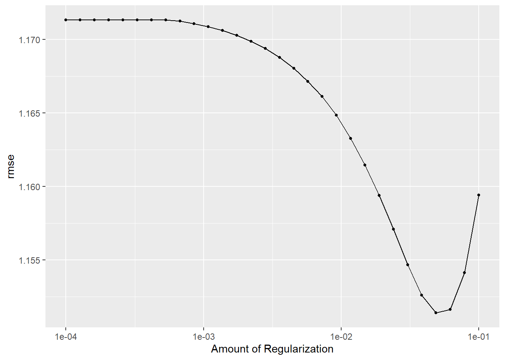
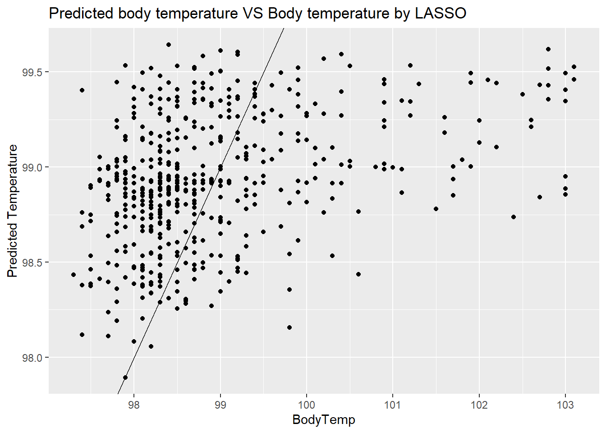
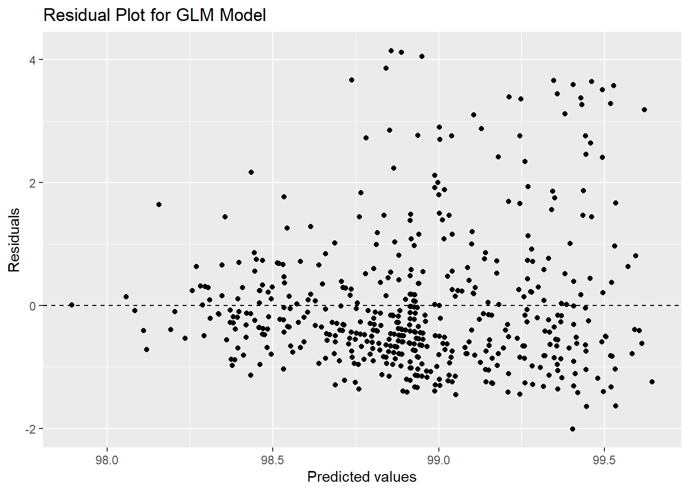
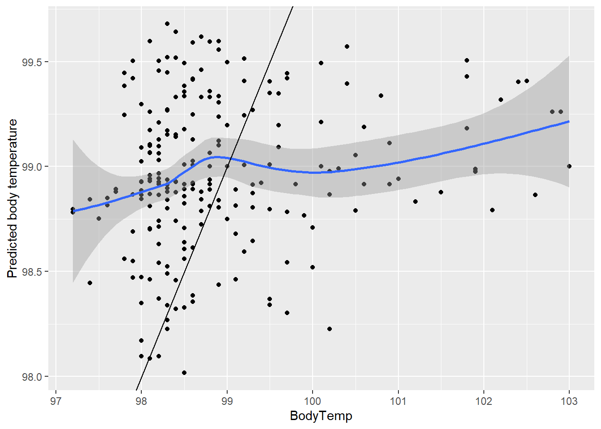
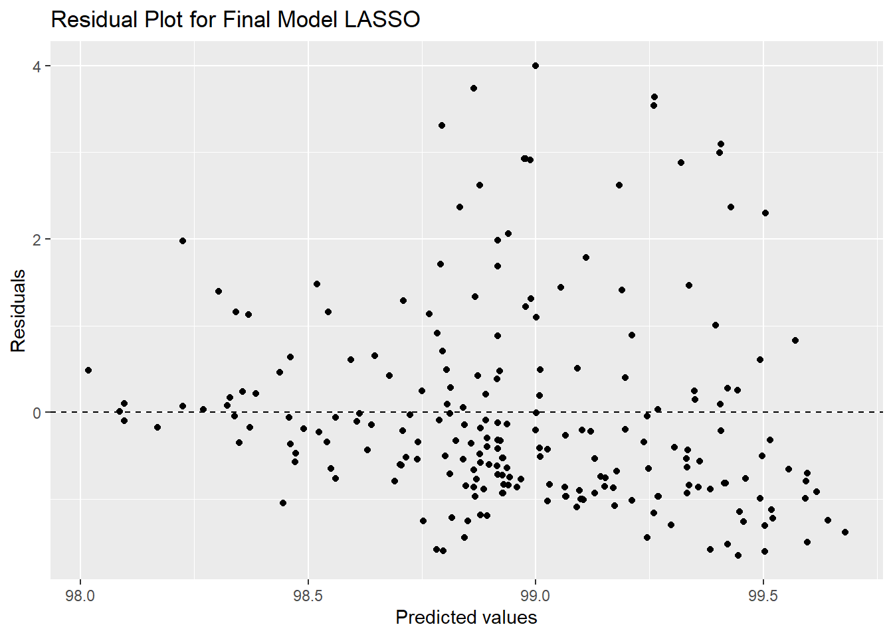

Attaching package: 'rpart'
The following object is masked from 'package:dials':
prune
library(glmnet)
Loading required package: Matrix
Attaching package: 'Matrix'
The following objects are masked from 'package:tidyr':
expand, pack, unpack
Loaded glmnet 4.1-6
library(ranger)library(vip)
Warning: package 'vip' was built under R version 4.2.3
Attaching package: 'vip'
The following object is masked from 'package:utils':
vi
library(rpart.plot)
Warning: package 'rpart.plot' was built under R version 4.2.3
set.seed(123)# data splittingbodytemp_split=initial_split(exp_data,prop=0.7,strata = BodyTemp)bodytemp_train=training(bodytemp_split)bodytemp_test=testing(bodytemp_split)bodytemp_train
SwollenLymphNodes ChestCongestion ChillsSweats NasalCongestion Sneeze
10 No Yes No Yes No
15 Yes Yes Yes Yes No
18 Yes Yes Yes Yes Yes
20 Yes Yes Yes Yes Yes
21 No Yes No No Yes
39 No No Yes Yes Yes
48 No No No Yes Yes
49 No Yes Yes No No
52 No No Yes Yes No
71 Yes Yes Yes Yes No
82 No Yes Yes Yes Yes
83 Yes No Yes Yes Yes
84 No Yes No No Yes
85 Yes Yes Yes Yes Yes
90 No Yes No No No
91 No Yes Yes Yes No
95 No Yes Yes Yes Yes
98 Yes No No Yes Yes
114 No Yes Yes No Yes
122 No No No No No
132 Yes Yes No Yes Yes
137 No No Yes No No
147 No Yes Yes Yes Yes
155 No No Yes No No
157 Yes Yes Yes Yes Yes
162 Yes Yes Yes Yes Yes
164 No Yes Yes Yes Yes
166 No No No No No
168 Yes No Yes Yes No
186 Yes Yes Yes Yes Yes
189 Yes Yes Yes Yes Yes
191 No No Yes No Yes
194 No No Yes No No
196 No No Yes Yes Yes
197 Yes Yes No Yes Yes
200 No No Yes Yes Yes
210 No No No Yes Yes
212 No No Yes Yes No
214 Yes Yes Yes Yes Yes
226 No No Yes No No
241 No Yes Yes Yes Yes
246 No Yes No Yes Yes
250 Yes No No Yes Yes
255 Yes No No No No
258 No No Yes Yes Yes
259 No Yes Yes Yes Yes
261 No Yes Yes Yes Yes
262 Yes Yes No Yes Yes
263 No Yes Yes Yes No
268 No No Yes Yes No
271 Yes No Yes Yes Yes
272 No No Yes Yes Yes
273 No Yes Yes Yes No
275 No No Yes Yes Yes
280 Yes Yes Yes Yes Yes
288 Yes No No No No
294 Yes No No No No
297 Yes Yes Yes Yes Yes
303 No No Yes Yes Yes
305 No No Yes Yes No
308 Yes No No No No
312 No No Yes Yes Yes
314 Yes No Yes Yes No
316 No No No Yes Yes
317 Yes No No Yes No
318 No Yes Yes Yes No
319 No No No Yes No
320 Yes No Yes Yes Yes
321 No No Yes No No
324 Yes Yes Yes Yes No
329 Yes No Yes Yes Yes
331 No Yes Yes Yes Yes
342 Yes No No No No
347 Yes Yes Yes Yes Yes
348 Yes Yes Yes Yes Yes
351 Yes Yes Yes Yes Yes
357 Yes Yes No Yes Yes
367 No No Yes No No
372 No No Yes Yes Yes
373 No Yes Yes Yes Yes
376 Yes No No Yes Yes
389 No No Yes No Yes
391 No No Yes Yes Yes
396 No No Yes No No
409 No No Yes Yes No
412 No Yes No Yes Yes
420 Yes No Yes Yes Yes
426 No No No Yes Yes
431 No No No No Yes
442 No No Yes Yes Yes
443 No Yes Yes Yes No
451 No No Yes Yes No
453 Yes Yes Yes Yes Yes
460 No No Yes No No
479 Yes No No Yes Yes
484 Yes Yes Yes Yes Yes
485 Yes No No Yes No
487 Yes Yes Yes Yes Yes
489 Yes No No Yes Yes
491 Yes Yes Yes Yes Yes
497 Yes No Yes Yes Yes
508 Yes Yes Yes Yes Yes
509 Yes Yes No Yes Yes
510 No Yes Yes Yes No
513 Yes No Yes Yes Yes
522 No Yes Yes Yes No
528 No Yes Yes Yes Yes
529 No No Yes Yes Yes
533 Yes Yes Yes Yes No
534 Yes No Yes Yes Yes
537 No No Yes No Yes
552 No No Yes Yes No
553 Yes Yes No Yes Yes
560 Yes No Yes Yes No
574 Yes Yes Yes Yes No
576 No No No Yes No
583 No Yes Yes Yes No
590 Yes No No No No
594 No No Yes Yes No
595 Yes Yes Yes Yes Yes
596 No Yes Yes No No
604 No Yes No Yes No
608 Yes No No Yes No
609 No No Yes Yes No
615 No No Yes Yes Yes
616 No No Yes Yes Yes
621 No Yes Yes Yes Yes
623 No Yes Yes Yes Yes
627 Yes Yes Yes Yes Yes
628 Yes No No Yes Yes
629 Yes Yes Yes Yes Yes
655 No No Yes Yes Yes
656 Yes No Yes Yes Yes
658 No Yes Yes Yes No
659 No Yes Yes Yes Yes
662 Yes No Yes Yes Yes
664 Yes No No No Yes
668 No Yes No Yes Yes
683 No Yes No Yes Yes
684 Yes Yes Yes Yes No
692 No Yes Yes Yes Yes
696 Yes Yes Yes Yes Yes
699 No Yes Yes Yes No
700 No Yes Yes Yes No
701 No No No Yes Yes
711 Yes Yes No Yes Yes
713 No Yes No No No
714 Yes No Yes Yes Yes
717 No No Yes No No
719 Yes No Yes Yes Yes
720 No No Yes Yes Yes
721 No No Yes No No
1 Yes No No No No
6 No No Yes No Yes
8 No Yes Yes Yes Yes
9 Yes Yes Yes Yes No
19 Yes Yes Yes Yes Yes
22 Yes No Yes No Yes
37 No No Yes Yes No
46 Yes Yes Yes Yes No
53 No Yes Yes Yes Yes
63 Yes No Yes No No
66 Yes No Yes Yes Yes
74 No Yes Yes Yes No
79 Yes Yes Yes Yes Yes
92 No Yes No Yes Yes
93 No No Yes Yes Yes
106 No Yes Yes Yes No
113 Yes Yes Yes Yes Yes
133 No No Yes Yes Yes
139 Yes Yes Yes Yes Yes
140 Yes Yes Yes No No
148 No Yes No No No
150 Yes Yes Yes Yes Yes
171 No No Yes Yes Yes
179 No No Yes Yes Yes
181 No Yes Yes Yes Yes
188 No Yes Yes Yes Yes
192 No No Yes Yes No
193 Yes Yes No Yes No
195 No Yes No Yes Yes
206 Yes No No Yes Yes
208 Yes No Yes Yes Yes
227 No Yes Yes Yes Yes
243 Yes Yes Yes Yes No
244 Yes No Yes Yes No
248 No Yes Yes No No
249 No No Yes Yes Yes
260 Yes No Yes No No
269 Yes Yes Yes No Yes
279 Yes No Yes Yes Yes
285 No No Yes No Yes
287 Yes Yes Yes Yes No
289 Yes No Yes Yes No
290 No Yes Yes Yes Yes
293 No No Yes Yes Yes
299 Yes Yes Yes Yes Yes
306 No Yes Yes Yes Yes
315 No Yes No Yes No
327 Yes Yes Yes Yes Yes
332 Yes Yes Yes Yes No
336 No Yes Yes Yes No
346 No Yes Yes Yes Yes
375 No No Yes Yes Yes
378 No No Yes Yes Yes
380 Yes Yes No Yes Yes
382 Yes No Yes Yes Yes
387 No Yes Yes No Yes
395 Yes Yes No Yes Yes
397 Yes Yes Yes No No
404 No Yes Yes Yes Yes
408 No No Yes Yes Yes
415 Yes Yes Yes Yes No
422 No No Yes Yes Yes
429 Yes Yes Yes Yes No
435 No Yes Yes No Yes
457 Yes Yes No Yes Yes
468 No No Yes Yes Yes
472 Yes No Yes No No
481 No No Yes Yes Yes
490 Yes Yes Yes Yes Yes
493 Yes No Yes Yes Yes
496 No No Yes Yes No
502 No Yes Yes No Yes
512 No Yes Yes Yes Yes
518 No Yes No No No
519 No Yes No No No
525 No Yes Yes Yes Yes
530 No Yes Yes Yes No
545 No Yes Yes Yes Yes
547 No Yes Yes Yes Yes
548 Yes Yes Yes Yes No
551 Yes No Yes Yes No
554 Yes No Yes Yes Yes
559 No No Yes Yes No
578 No No Yes Yes No
581 No No Yes No No
582 No No No Yes Yes
591 Yes No Yes Yes Yes
610 Yes No Yes Yes Yes
611 No No Yes Yes Yes
613 Yes Yes Yes Yes Yes
626 Yes No Yes Yes No
632 Yes Yes Yes Yes Yes
636 No No No Yes No
641 No Yes Yes Yes Yes
643 Yes Yes Yes Yes Yes
645 Yes Yes Yes Yes Yes
648 No No Yes Yes No
661 Yes Yes Yes Yes Yes
669 Yes Yes No Yes No
671 Yes Yes Yes Yes Yes
674 No Yes No Yes Yes
675 No Yes Yes Yes Yes
680 No Yes Yes Yes Yes
685 No No Yes Yes Yes
693 No No No Yes Yes
716 Yes Yes Yes Yes No
725 No No Yes Yes Yes
728 No Yes Yes Yes Yes
13 No No Yes Yes No
16 No Yes Yes Yes Yes
30 No Yes Yes No No
31 Yes No Yes Yes Yes
34 Yes Yes Yes No Yes
38 Yes Yes Yes Yes Yes
44 No No Yes No Yes
57 No No Yes No No
58 No No Yes Yes Yes
60 No Yes Yes No No
64 Yes Yes Yes Yes Yes
65 Yes No Yes Yes No
80 Yes No Yes Yes No
86 Yes Yes Yes Yes Yes
94 No Yes No Yes No
97 Yes Yes No Yes Yes
99 No No Yes No Yes
100 No Yes Yes Yes Yes
105 No Yes Yes Yes No
107 No Yes Yes Yes No
110 Yes No Yes Yes No
111 No Yes Yes No Yes
112 No Yes Yes Yes Yes
115 No No Yes Yes Yes
119 No No Yes No Yes
128 Yes Yes Yes Yes Yes
130 No Yes Yes Yes No
138 No Yes Yes Yes No
142 Yes Yes Yes Yes No
143 No No No Yes No
145 No No Yes Yes Yes
149 Yes Yes Yes Yes Yes
159 No Yes Yes Yes Yes
161 No Yes Yes Yes Yes
163 Yes Yes Yes Yes No
169 No Yes Yes Yes No
176 No Yes Yes Yes Yes
182 Yes Yes Yes Yes Yes
199 No Yes Yes Yes Yes
202 No No No Yes No
203 No Yes Yes Yes No
213 Yes Yes Yes Yes No
218 Yes Yes Yes Yes Yes
219 No No Yes No No
225 No Yes Yes Yes No
229 No Yes Yes Yes Yes
230 Yes No Yes No No
231 No Yes Yes Yes Yes
232 No Yes Yes No No
234 Yes Yes Yes Yes Yes
239 Yes Yes Yes Yes Yes
251 Yes No Yes Yes Yes
252 Yes Yes Yes Yes No
278 No Yes Yes Yes Yes
295 No Yes Yes No No
296 No Yes No Yes No
307 Yes No Yes Yes No
310 No No Yes Yes No
322 No No No No Yes
334 No No Yes Yes Yes
335 No Yes No Yes No
341 No Yes No Yes Yes
343 No Yes Yes Yes Yes
354 No Yes Yes No Yes
355 Yes No Yes Yes Yes
358 Yes Yes Yes Yes Yes
360 No Yes Yes No Yes
363 No Yes Yes Yes No
366 No Yes Yes Yes No
374 Yes Yes Yes Yes Yes
406 Yes Yes Yes Yes Yes
413 Yes Yes Yes Yes Yes
423 Yes Yes Yes Yes No
424 Yes No Yes Yes Yes
428 No No Yes Yes Yes
432 Yes Yes Yes Yes Yes
433 No Yes Yes Yes Yes
434 No Yes Yes No Yes
436 Yes Yes Yes Yes Yes
438 No No Yes No No
439 No Yes Yes No No
447 Yes No Yes Yes Yes
448 No Yes Yes Yes No
452 No No Yes No No
454 No Yes No No No
455 No No Yes No No
458 No No Yes No No
465 No No Yes Yes No
477 Yes No Yes No No
494 No Yes Yes Yes Yes
500 No Yes Yes No No
501 Yes No Yes Yes Yes
504 Yes No Yes No No
505 No No Yes Yes Yes
532 Yes No No Yes Yes
535 Yes Yes Yes Yes No
536 No No Yes Yes No
538 Yes No Yes No No
543 Yes No Yes Yes Yes
546 No Yes Yes Yes No
549 No No Yes Yes No
555 Yes Yes Yes Yes No
556 Yes Yes Yes Yes Yes
562 No Yes No No Yes
569 Yes Yes Yes Yes Yes
570 No No Yes Yes No
573 Yes No No Yes Yes
577 No Yes Yes Yes No
587 Yes No No Yes No
593 No No Yes Yes Yes
634 No Yes Yes Yes Yes
635 No No Yes Yes No
638 Yes Yes Yes No Yes
650 No No Yes Yes Yes
651 Yes Yes No Yes Yes
652 No No Yes Yes No
657 No No Yes Yes Yes
677 No No No Yes Yes
679 Yes Yes Yes No No
688 No Yes No Yes Yes
689 No No Yes Yes Yes
690 Yes Yes Yes Yes Yes
695 No No Yes No Yes
704 Yes Yes Yes Yes Yes
705 No Yes Yes Yes No
708 Yes No Yes Yes No
709 Yes Yes Yes Yes Yes
712 No No Yes Yes Yes
724 No No Yes Yes Yes
729 No Yes Yes Yes Yes
3 Yes Yes Yes Yes Yes
5 Yes No Yes No No
7 No No Yes No No
23 No Yes Yes Yes Yes
24 Yes Yes Yes Yes Yes
26 No No Yes Yes Yes
28 Yes Yes Yes Yes Yes
41 No No Yes Yes No
45 No No Yes Yes No
54 Yes No Yes Yes No
55 Yes Yes Yes Yes No
56 No Yes Yes Yes Yes
59 No No Yes Yes No
62 No No Yes No No
67 No No Yes Yes No
69 Yes Yes Yes Yes Yes
72 Yes No Yes Yes No
76 No Yes Yes Yes No
78 No Yes Yes No No
81 No Yes Yes Yes Yes
88 No Yes Yes Yes No
96 No No Yes No No
101 No Yes Yes No No
108 No Yes Yes Yes Yes
123 No No Yes No No
125 Yes Yes Yes Yes Yes
127 No No Yes No Yes
134 No No Yes No No
144 Yes Yes Yes Yes Yes
152 No No Yes No No
153 No Yes Yes Yes Yes
154 No No Yes No No
158 No No Yes Yes No
165 No No Yes Yes Yes
167 No Yes Yes Yes Yes
172 Yes No Yes No No
175 Yes Yes Yes Yes No
178 No No No Yes Yes
180 No Yes Yes Yes No
183 No No No No No
204 No Yes Yes Yes Yes
211 No Yes Yes Yes Yes
215 No Yes Yes Yes No
217 Yes Yes Yes No Yes
223 No Yes Yes Yes No
237 Yes Yes Yes Yes No
238 No Yes Yes Yes No
242 No Yes Yes Yes No
245 No Yes Yes Yes Yes
264 No No Yes Yes No
270 No Yes Yes Yes Yes
274 No Yes Yes No No
276 No No Yes Yes Yes
277 No Yes Yes Yes No
282 Yes Yes Yes Yes No
284 Yes No Yes No No
292 Yes No Yes No No
298 Yes No Yes Yes Yes
309 No No Yes No Yes
326 No Yes No Yes Yes
328 No Yes Yes Yes No
330 No Yes Yes Yes No
333 Yes Yes Yes No Yes
339 No Yes Yes Yes No
364 Yes Yes No No No
365 Yes Yes Yes No No
377 No No Yes No No
383 No Yes Yes No Yes
384 Yes No Yes No No
386 Yes No Yes Yes Yes
388 No No Yes No No
390 No No Yes No No
403 Yes Yes Yes Yes Yes
417 No Yes Yes Yes No
419 No Yes Yes Yes No
421 Yes Yes Yes Yes No
437 Yes No Yes No No
440 No Yes Yes Yes No
446 Yes Yes Yes Yes No
461 Yes Yes Yes Yes Yes
469 Yes No Yes Yes Yes
474 Yes Yes Yes Yes Yes
480 No No Yes Yes Yes
486 No Yes Yes Yes Yes
495 No Yes Yes Yes No
499 Yes Yes Yes Yes Yes
506 No Yes Yes No No
517 No No Yes No No
526 No No Yes Yes No
541 No No No Yes No
544 Yes Yes Yes Yes No
563 Yes Yes Yes Yes No
567 No Yes Yes Yes Yes
568 Yes No Yes No No
572 Yes Yes No No No
579 No Yes Yes Yes Yes
585 Yes No Yes No No
586 No Yes Yes Yes No
589 Yes No Yes No No
592 No Yes No Yes No
605 Yes Yes No Yes No
625 Yes Yes Yes Yes No
631 Yes Yes No Yes Yes
633 No Yes Yes Yes No
637 No No Yes Yes No
660 Yes Yes Yes Yes Yes
663 No Yes No Yes No
665 Yes Yes Yes Yes No
670 No Yes Yes Yes Yes
681 Yes No Yes Yes No
682 No Yes Yes Yes No
691 No Yes Yes Yes Yes
697 No No Yes No No
702 No No Yes Yes No
707 No Yes No Yes Yes
715 No Yes Yes Yes No
722 Yes Yes Yes Yes No
730 No Yes Yes Yes Yes
Fatigue SubjectiveFever Headache Weakness CoughIntensity Myalgia RunnyNose
10 Yes No Yes Moderate Moderate Mild Yes
15 Yes No Yes Mild None Moderate Yes
18 Yes No Yes Mild Mild None Yes
20 Yes Yes Yes Mild Moderate Moderate Yes
21 Yes No Yes Severe Severe Moderate No
39 Yes Yes Yes Moderate Severe Moderate Yes
48 Yes No Yes Mild Mild None Yes
49 Yes Yes No Moderate Mild Moderate Yes
52 No Yes No Moderate Mild Moderate Yes
71 Yes No Yes Moderate Moderate Mild Yes
82 Yes No Yes Mild Severe Mild Yes
83 No Yes Yes None Severe Mild Yes
84 Yes No No Moderate Mild Moderate Yes
85 Yes Yes Yes Mild Moderate None Yes
90 Yes Yes Yes Moderate Moderate None No
91 Yes Yes Yes Mild Severe Moderate Yes
95 Yes Yes Yes Severe Severe None Yes
98 Yes No Yes Moderate Mild Moderate Yes
114 Yes Yes Yes Severe Moderate Severe Yes
122 Yes No Yes Moderate Moderate None Yes
132 Yes Yes Yes Moderate Mild Moderate Yes
137 Yes No Yes Moderate Mild Moderate No
147 Yes Yes Yes Severe Severe Moderate Yes
155 Yes No Yes Mild Severe Moderate Yes
157 Yes Yes Yes Moderate Severe Moderate No
162 Yes Yes Yes Moderate Moderate Moderate Yes
164 Yes No Yes Moderate Moderate Moderate Yes
166 No No No Moderate Moderate Severe No
168 No No Yes Mild Moderate Mild No
186 Yes Yes Yes Moderate Mild Moderate Yes
189 Yes Yes Yes Moderate Moderate Severe Yes
191 Yes No No Mild Moderate Mild Yes
194 Yes No Yes Moderate None Moderate Yes
196 Yes Yes Yes Moderate Moderate Moderate Yes
197 No No Yes None Severe None Yes
200 Yes Yes Yes Moderate Mild Moderate Yes
210 Yes Yes Yes Moderate Severe Severe Yes
212 Yes Yes No Mild Severe Mild Yes
214 Yes Yes Yes Mild Severe Mild Yes
226 Yes No Yes Mild Mild None Yes
241 Yes Yes Yes Moderate Moderate Moderate Yes
246 Yes No Yes Severe Severe Moderate Yes
250 Yes No Yes None Moderate None Yes
255 Yes Yes Yes Mild Mild None No
258 Yes No No Moderate Mild Moderate Yes
259 Yes Yes Yes Moderate Moderate Moderate Yes
261 Yes Yes Yes Severe Severe Severe Yes
262 Yes No Yes Moderate Moderate Moderate Yes
263 Yes No Yes Moderate Severe None Yes
268 No Yes No Mild Moderate Moderate Yes
271 Yes Yes Yes Severe Moderate Moderate Yes
272 Yes No Yes Mild Moderate None Yes
273 Yes Yes Yes Moderate Severe Moderate Yes
275 Yes No Yes Moderate Mild Moderate Yes
280 Yes Yes Yes Moderate Moderate Moderate Yes
288 No Yes Yes Mild Moderate Mild Yes
294 No Yes Yes Mild None Moderate No
297 Yes Yes Yes Moderate Severe Severe Yes
303 Yes Yes Yes Moderate Severe Severe Yes
305 Yes Yes Yes Mild Severe Moderate Yes
308 Yes No No Mild Mild Mild Yes
312 Yes No Yes None Mild Mild Yes
314 Yes No Yes Mild Mild Moderate Yes
316 Yes Yes Yes Moderate Mild Mild No
317 Yes No No Mild Moderate Mild No
318 Yes No Yes Moderate None Moderate No
319 Yes No Yes Moderate Mild Mild Yes
320 Yes Yes Yes Severe Severe Severe No
321 Yes Yes Yes Moderate None Moderate No
324 Yes Yes Yes Mild Moderate Moderate Yes
329 No Yes Yes Moderate Moderate None Yes
331 Yes Yes Yes Moderate Moderate Severe Yes
342 Yes No Yes Mild Severe Mild Yes
347 Yes Yes Yes Severe Moderate Severe Yes
348 Yes Yes Yes Mild Moderate Mild Yes
351 Yes Yes No Moderate Moderate Moderate Yes
357 Yes No Yes Mild Moderate Mild Yes
367 Yes Yes Yes Moderate Mild Mild No
372 No Yes Yes Moderate Severe Mild Yes
373 Yes Yes Yes Mild Moderate Mild Yes
376 Yes No Yes Moderate Mild Moderate Yes
389 No Yes Yes Moderate Mild Moderate No
391 Yes Yes Yes Mild Mild Moderate Yes
396 No Yes Yes Moderate Mild None No
409 Yes No No Moderate Severe Mild No
412 Yes Yes Yes Mild Mild Mild Yes
420 Yes Yes Yes Severe Moderate Severe Yes
426 Yes No Yes Moderate Moderate Mild Yes
431 Yes No No Mild Severe Mild Yes
442 Yes No Yes Moderate Mild Moderate Yes
443 Yes Yes Yes Moderate Severe Moderate No
451 No No Yes Mild Moderate Moderate No
453 Yes No Yes None Mild None Yes
460 Yes Yes No Mild Mild Mild Yes
479 Yes No Yes Moderate None Moderate Yes
484 Yes No Yes Mild Severe Mild Yes
485 Yes No No None Mild None No
487 Yes No Yes Moderate Moderate Mild Yes
489 No No No Mild Mild None Yes
491 Yes No Yes Moderate Severe Mild Yes
497 Yes No Yes Severe Mild Moderate Yes
508 Yes Yes Yes Mild Severe Mild Yes
509 Yes Yes Yes Severe Moderate Moderate Yes
510 Yes Yes Yes Moderate Moderate Severe Yes
513 Yes No Yes Mild Moderate Mild Yes
522 Yes Yes Yes Moderate Mild Moderate Yes
528 Yes No Yes Moderate Mild Moderate Yes
529 Yes Yes Yes Mild Moderate Mild Yes
533 Yes Yes Yes Moderate Severe Moderate No
534 Yes No Yes Moderate Severe Moderate Yes
537 Yes No Yes Moderate None Mild Yes
552 Yes No Yes Mild None Moderate No
553 Yes No Yes Moderate Severe None Yes
560 Yes No Yes None None Mild Yes
574 Yes Yes Yes Moderate Moderate Mild No
576 Yes No Yes Moderate Moderate Moderate Yes
583 No No No Mild Moderate Mild Yes
590 Yes No Yes Severe None Moderate Yes
594 Yes Yes No Mild Moderate None Yes
595 Yes Yes Yes Moderate Moderate Severe Yes
596 Yes No Yes Mild Mild Moderate Yes
604 No No No Mild Severe None Yes
608 Yes No Yes None Moderate Mild No
609 Yes Yes Yes Moderate Mild Moderate Yes
615 Yes No Yes None Moderate Mild Yes
616 Yes Yes Yes None Moderate None Yes
621 Yes Yes Yes Moderate Moderate Moderate Yes
623 Yes Yes Yes Moderate Moderate Severe Yes
627 No Yes Yes Mild Moderate Mild Yes
628 Yes No Yes None None Mild Yes
629 Yes Yes Yes Severe Severe Severe Yes
655 Yes Yes Yes Moderate Mild Moderate Yes
656 Yes Yes No Moderate Mild Moderate Yes
658 Yes No No Moderate Moderate Moderate No
659 Yes No Yes None Moderate Moderate Yes
662 Yes Yes Yes Moderate Mild Moderate Yes
664 Yes No Yes Mild None Moderate No
668 No No Yes None Severe None Yes
683 Yes No Yes None Moderate Mild Yes
684 Yes Yes Yes Severe Mild Severe Yes
692 No Yes No None Severe Mild Yes
696 Yes Yes Yes Mild Moderate Moderate Yes
699 Yes No No Moderate Moderate Moderate Yes
700 Yes No Yes Severe Moderate Severe No
701 Yes No No Mild Moderate None No
711 Yes No Yes Moderate Severe Moderate Yes
713 Yes Yes Yes None Moderate None No
714 Yes Yes Yes Moderate Mild Moderate No
717 Yes No No Mild Mild Moderate No
719 No Yes Yes Severe Severe Moderate Yes
720 Yes No Yes Moderate None Mild Yes
721 Yes No Yes Moderate None Moderate No
1 Yes Yes Yes Mild Severe Mild No
6 Yes Yes Yes Moderate Moderate Moderate No
8 Yes Yes Yes Severe Moderate Severe Yes
9 Yes Yes Yes Moderate Moderate Moderate Yes
19 Yes Yes Yes Moderate Severe Moderate Yes
22 Yes Yes Yes Moderate Moderate Moderate Yes
37 No Yes Yes Mild None Mild No
46 Yes Yes Yes Moderate Moderate Moderate Yes
53 Yes Yes No Mild Moderate Moderate Yes
63 Yes Yes Yes Moderate Mild Moderate No
66 Yes Yes Yes Mild Moderate Mild Yes
74 Yes Yes Yes Severe Severe Moderate Yes
79 Yes No Yes Severe Moderate Moderate Yes
92 Yes No No None Mild Mild Yes
93 Yes Yes Yes Moderate Moderate Moderate Yes
106 Yes Yes No Moderate Severe Moderate Yes
113 Yes Yes Yes Moderate Severe Moderate Yes
133 Yes Yes No Moderate Moderate Moderate Yes
139 No Yes Yes Moderate Severe Severe Yes
140 Yes No Yes None Moderate None No
148 Yes Yes No Mild Moderate Mild No
150 Yes Yes Yes Moderate Severe Mild Yes
171 Yes No Yes Mild Moderate Moderate Yes
179 Yes Yes Yes Mild Moderate Mild Yes
181 Yes Yes Yes Moderate Moderate Moderate Yes
188 Yes Yes Yes Moderate Mild Moderate Yes
192 No Yes Yes Moderate Moderate Moderate Yes
193 No Yes Yes Mild Moderate None Yes
195 Yes No Yes Moderate Moderate Moderate Yes
206 Yes No Yes Mild Mild None Yes
208 Yes Yes Yes Mild Severe Mild Yes
227 Yes Yes Yes Severe Moderate Moderate No
243 No No Yes Mild Severe None Yes
244 Yes Yes Yes Mild Mild Mild Yes
248 Yes Yes Yes Severe Moderate Severe No
249 Yes Yes Yes Mild Severe Mild Yes
260 Yes Yes Yes Mild Moderate Mild No
269 Yes Yes Yes Severe Moderate Moderate Yes
279 Yes No Yes Mild Moderate Mild Yes
285 Yes Yes Yes None Severe Mild Yes
287 Yes Yes Yes Mild Severe Mild Yes
289 Yes Yes Yes Moderate Moderate Moderate No
290 Yes Yes Yes Mild Moderate Mild Yes
293 Yes Yes Yes Moderate Severe None Yes
299 Yes Yes Yes Moderate Severe Moderate Yes
306 Yes Yes No Moderate Severe Moderate Yes
315 Yes No Yes Mild Moderate Mild Yes
327 Yes No Yes Mild Moderate Mild Yes
332 Yes No No Severe Moderate Moderate No
336 Yes No No Mild Moderate Mild No
346 Yes Yes Yes Severe Moderate Moderate Yes
375 Yes Yes Yes Moderate Mild Moderate Yes
378 Yes Yes Yes Moderate Moderate Moderate Yes
380 Yes Yes Yes Mild Severe Moderate Yes
382 Yes Yes Yes None Mild None Yes
387 Yes No Yes Moderate Moderate Moderate No
395 Yes No Yes Moderate Mild Moderate Yes
397 Yes Yes Yes Moderate Moderate Mild Yes
404 Yes Yes Yes Moderate Moderate Moderate No
408 Yes Yes Yes Moderate Mild Moderate Yes
415 Yes Yes Yes Moderate Moderate Mild Yes
422 Yes No Yes Mild Severe Mild No
429 Yes Yes Yes Mild Moderate Mild No
435 Yes Yes Yes Moderate Moderate Moderate Yes
457 Yes No Yes Mild Moderate Mild Yes
468 Yes Yes Yes Mild Moderate Mild Yes
472 Yes Yes No Mild Mild Mild Yes
481 Yes Yes Yes Moderate Moderate Moderate Yes
490 Yes Yes Yes Moderate Moderate Moderate Yes
493 Yes Yes Yes Moderate Moderate Moderate Yes
496 Yes No Yes Mild Moderate Mild No
502 Yes Yes No Mild Mild None Yes
512 Yes No Yes Moderate Moderate Moderate Yes
518 Yes No Yes Mild Moderate None Yes
519 Yes No No Mild Severe None No
525 Yes Yes Yes Mild Moderate Moderate No
530 Yes Yes No Mild Moderate Mild Yes
545 Yes Yes Yes Mild Severe None No
547 Yes Yes Yes Severe Severe Severe Yes
548 Yes Yes Yes Mild Moderate None Yes
551 Yes Yes No Mild Mild Mild No
554 Yes Yes Yes Severe Moderate Moderate Yes
559 Yes No Yes Moderate Mild Moderate Yes
578 Yes No Yes Mild Mild Mild Yes
581 Yes Yes Yes Mild Moderate Moderate Yes
582 Yes Yes Yes Mild Moderate Moderate Yes
591 Yes Yes Yes Moderate Mild Mild Yes
610 Yes Yes Yes Moderate Moderate Mild Yes
611 Yes Yes Yes Severe Moderate Mild Yes
613 Yes Yes Yes Moderate None Moderate Yes
626 Yes Yes Yes Moderate Mild Moderate Yes
632 Yes Yes Yes Moderate Mild Moderate Yes
636 Yes No Yes Mild Moderate Mild Yes
641 Yes No Yes Severe Moderate Severe Yes
643 Yes No No Moderate Moderate None Yes
645 Yes Yes Yes Moderate Moderate Moderate Yes
648 Yes Yes Yes Moderate Mild Moderate Yes
661 Yes Yes Yes Severe Severe Severe Yes
669 No No No None Mild None No
671 Yes Yes Yes Moderate Moderate Moderate Yes
674 Yes No Yes Moderate Moderate Mild Yes
675 Yes Yes Yes Moderate Moderate Mild No
680 No Yes No Moderate Severe Mild Yes
685 Yes Yes Yes Severe Severe Severe Yes
693 Yes No Yes Moderate Severe Mild Yes
716 Yes Yes Yes Mild Moderate Mild Yes
725 Yes Yes Yes Severe Mild Moderate Yes
728 Yes No Yes Moderate Severe Mild Yes
13 Yes No Yes Moderate Mild Moderate Yes
16 Yes Yes Yes Severe Moderate Severe Yes
30 Yes Yes Yes Moderate Moderate Moderate No
31 Yes No Yes Mild None Mild Yes
34 Yes Yes Yes Severe Mild Severe Yes
38 Yes Yes Yes Moderate Moderate Mild Yes
44 Yes No Yes None Moderate Mild Yes
57 Yes Yes Yes Moderate Severe Moderate Yes
58 Yes Yes Yes Severe None Moderate Yes
60 Yes Yes Yes Severe Moderate Severe Yes
64 Yes No Yes Severe None Moderate No
65 Yes Yes Yes Mild Mild Mild No
80 Yes Yes Yes Severe Moderate Severe No
86 Yes Yes Yes Severe Severe Severe Yes
94 Yes No No Mild Moderate None No
97 Yes No Yes Mild Moderate Moderate Yes
99 No Yes Yes Mild Moderate Mild No
100 Yes Yes Yes Severe Severe Severe Yes
105 Yes No Yes Moderate Severe Moderate No
107 Yes No No Moderate Severe Moderate No
110 Yes Yes Yes Severe Severe Moderate Yes
111 Yes Yes No Moderate Severe Mild Yes
112 Yes No No Moderate Moderate Mild Yes
115 Yes No Yes Moderate Moderate Moderate Yes
119 Yes Yes Yes Moderate Moderate Severe Yes
128 Yes No Yes Moderate Moderate Severe Yes
130 Yes Yes Yes Mild Moderate Mild Yes
138 Yes Yes Yes Mild Moderate Moderate No
142 Yes Yes Yes Mild Mild Severe No
143 No Yes Yes Moderate Moderate Moderate No
145 Yes Yes Yes Moderate Mild Moderate Yes
149 Yes Yes Yes Moderate Moderate Severe Yes
159 Yes Yes Yes Moderate Severe Moderate No
161 Yes No Yes Severe Severe Moderate Yes
163 Yes Yes Yes Severe Severe Severe No
169 Yes Yes Yes Moderate Moderate Moderate Yes
176 Yes No No Mild Moderate Moderate Yes
182 Yes Yes Yes Moderate Severe Moderate Yes
199 Yes Yes Yes Moderate Moderate Severe Yes
202 No No Yes Mild Severe Mild Yes
203 No Yes Yes Mild Severe None Yes
213 Yes Yes Yes Mild None Mild Yes
218 Yes No Yes Mild Moderate Mild Yes
219 Yes Yes Yes Moderate Moderate Severe Yes
225 Yes Yes No Moderate Severe Moderate Yes
229 Yes Yes Yes Moderate Moderate Severe Yes
230 Yes Yes Yes Severe Mild Moderate No
231 Yes No Yes Mild Severe None Yes
232 Yes No Yes Moderate Moderate Moderate No
234 Yes Yes Yes Moderate Mild Mild Yes
239 Yes Yes Yes Moderate Severe Moderate Yes
251 Yes No Yes Moderate Mild Mild Yes
252 Yes Yes No Moderate Moderate None No
278 Yes Yes Yes Moderate Moderate Mild Yes
295 Yes Yes No Moderate Mild Severe No
296 No No No Mild Moderate Mild No
307 Yes Yes No Mild Mild Mild Yes
310 Yes Yes Yes Moderate Mild Moderate Yes
322 Yes Yes Yes Severe Moderate Mild No
334 Yes No Yes Moderate Moderate Severe No
335 Yes Yes Yes Mild Mild Mild No
341 Yes No Yes Mild Mild Mild No
343 Yes Yes Yes Moderate Mild Moderate Yes
354 Yes No No None Moderate None Yes
355 Yes No Yes Moderate Mild Moderate Yes
358 Yes Yes Yes Mild Severe Moderate Yes
360 Yes Yes Yes Moderate Moderate Severe Yes
363 Yes Yes Yes Moderate Moderate Moderate Yes
366 Yes No Yes Moderate Moderate Moderate Yes
374 Yes Yes Yes Moderate Severe Moderate Yes
406 Yes No Yes Severe Mild Moderate Yes
413 Yes Yes Yes Moderate Severe Severe Yes
423 Yes Yes Yes Mild Moderate Moderate No
424 Yes Yes Yes Mild Mild Severe Yes
428 No Yes Yes Moderate Mild Moderate Yes
432 Yes No No Mild Mild Moderate Yes
433 Yes No No Mild Moderate Moderate Yes
434 Yes Yes Yes Severe Moderate Severe Yes
436 No Yes No Moderate Mild Severe Yes
438 Yes Yes Yes Severe None Severe Yes
439 Yes Yes No Mild Moderate Mild No
447 Yes No Yes Moderate Mild Moderate Yes
448 Yes Yes Yes Mild Moderate Mild No
452 Yes No Yes Moderate Moderate Mild No
454 Yes No Yes Mild Moderate Mild No
455 Yes No Yes Moderate Moderate Moderate No
458 Yes Yes Yes Moderate Moderate Mild Yes
465 Yes Yes No Moderate Severe Moderate No
477 Yes No Yes Moderate Moderate Moderate No
494 Yes Yes Yes Severe Moderate Moderate No
500 No Yes Yes Moderate Severe None No
501 Yes Yes No Moderate Severe Moderate Yes
504 Yes Yes Yes Moderate Severe Moderate No
505 Yes Yes Yes Moderate Mild Mild Yes
532 Yes Yes Yes Mild Severe Moderate Yes
535 Yes No Yes Moderate Moderate Moderate Yes
536 Yes No Yes Mild Mild Moderate Yes
538 Yes Yes Yes Severe Moderate Mild No
543 Yes Yes Yes Severe Moderate Severe Yes
546 Yes Yes Yes Severe Severe Severe Yes
549 Yes Yes Yes Mild Mild Mild Yes
555 Yes Yes No Moderate Moderate Moderate Yes
556 Yes Yes Yes Moderate Moderate Moderate Yes
562 Yes No Yes Moderate Severe Mild Yes
569 Yes No Yes Moderate Severe Moderate Yes
570 Yes Yes Yes Moderate Moderate Severe No
573 Yes No Yes Mild Severe Mild Yes
577 Yes No Yes Moderate Moderate Moderate Yes
587 Yes Yes Yes Moderate None None Yes
593 Yes Yes Yes Mild Mild Moderate No
634 Yes Yes Yes Moderate Moderate Mild Yes
635 Yes Yes Yes Severe Moderate Severe No
638 Yes Yes Yes Mild Moderate Mild No
650 Yes Yes Yes None Moderate Mild Yes
651 Yes Yes Yes Mild Mild Mild Yes
652 Yes Yes No None Moderate Mild Yes
657 Yes Yes Yes Mild Moderate None Yes
677 Yes No Yes Moderate Mild Moderate Yes
679 Yes Yes Yes Moderate Moderate Moderate Yes
688 Yes No Yes Moderate Severe Moderate Yes
689 Yes Yes Yes None Moderate Moderate Yes
690 Yes Yes Yes Severe Mild Moderate Yes
695 Yes Yes Yes Moderate None Severe Yes
704 Yes Yes Yes None Severe Moderate Yes
705 Yes Yes Yes Severe Severe Severe Yes
708 Yes Yes Yes Severe Mild Severe No
709 Yes Yes Yes Moderate Moderate Moderate Yes
712 Yes No Yes Severe Mild Severe No
724 Yes Yes Yes Moderate Moderate Severe Yes
729 Yes No Yes Moderate Mild Moderate Yes
3 Yes Yes Yes Severe Mild Severe Yes
5 Yes Yes Yes Moderate None Mild No
7 Yes Yes No Mild Severe Mild Yes
23 Yes Yes Yes Severe Moderate Moderate Yes
24 Yes Yes Yes Moderate Moderate Mild Yes
26 Yes Yes Yes Mild Mild Mild Yes
28 Yes Yes No Moderate Mild Severe No
41 Yes Yes Yes Moderate Moderate Moderate Yes
45 Yes Yes Yes Moderate Moderate Severe No
54 Yes Yes No Moderate Moderate Moderate Yes
55 Yes Yes Yes Moderate Moderate Moderate Yes
56 Yes Yes Yes Severe Mild Moderate Yes
59 Yes Yes Yes Mild Moderate Mild No
62 Yes Yes Yes Mild Moderate None No
67 Yes Yes Yes Moderate Mild Moderate Yes
69 Yes Yes Yes Moderate Moderate Severe Yes
72 Yes Yes Yes Moderate Severe Severe Yes
76 Yes Yes Yes Severe Moderate Moderate No
78 Yes No Yes Moderate Severe Moderate No
81 Yes Yes Yes Severe Moderate Severe No
88 Yes Yes Yes Moderate Severe None No
96 Yes Yes Yes Severe Moderate Severe No
101 Yes No Yes Moderate Severe Moderate No
108 Yes Yes Yes Moderate Moderate Moderate Yes
123 Yes Yes Yes Mild Mild Mild No
125 Yes Yes Yes Severe Severe Severe Yes
127 Yes Yes No Moderate Mild Moderate No
134 Yes No Yes Moderate Mild Severe No
144 Yes Yes No Mild Moderate Mild Yes
152 Yes Yes No Moderate Severe Mild No
153 Yes Yes Yes Moderate Moderate Severe Yes
154 Yes No Yes Severe Moderate Mild No
158 Yes Yes Yes Moderate Moderate Moderate Yes
165 Yes Yes Yes Severe Moderate Moderate No
167 Yes Yes Yes Severe Severe Moderate Yes
172 Yes Yes No Moderate Moderate Moderate No
175 Yes Yes Yes Moderate Severe Moderate Yes
178 Yes Yes Yes Moderate Moderate Mild Yes
180 Yes Yes Yes Moderate Mild Mild No
183 Yes No Yes Moderate Mild Moderate No
204 Yes No Yes Moderate Moderate Mild Yes
211 Yes Yes No Severe Mild Mild Yes
215 Yes Yes Yes Severe Moderate Mild Yes
217 Yes Yes Yes Moderate Moderate Moderate Yes
223 Yes Yes Yes Mild Severe Mild Yes
237 Yes Yes No Moderate Moderate Moderate Yes
238 Yes Yes Yes Moderate Severe Mild No
242 Yes No Yes Severe Moderate Severe No
245 Yes Yes Yes Severe Mild Severe Yes
264 Yes Yes Yes Moderate Severe Moderate No
270 Yes Yes Yes Mild Severe Mild Yes
274 Yes No Yes None Moderate Mild Yes
276 Yes Yes No Moderate Moderate Moderate Yes
277 Yes No Yes Mild Moderate Moderate Yes
282 Yes Yes Yes Moderate Moderate Moderate No
284 Yes Yes Yes Moderate Moderate Moderate Yes
292 Yes Yes Yes Mild Mild Severe No
298 Yes Yes Yes Severe Mild Mild Yes
309 Yes Yes Yes Moderate Moderate Moderate Yes
326 Yes No Yes Moderate Moderate Moderate Yes
328 Yes No Yes Moderate Severe Moderate No
330 Yes Yes Yes None Moderate Mild No
333 Yes Yes No Moderate Severe Moderate Yes
339 Yes Yes No Mild Moderate Mild Yes
364 No No No None Moderate None No
365 Yes Yes Yes Mild Moderate Mild No
377 Yes Yes Yes Moderate Moderate Mild Yes
383 Yes Yes Yes Moderate Severe Moderate No
384 Yes Yes Yes Moderate Moderate Moderate No
386 Yes Yes Yes Severe None Moderate No
388 Yes Yes Yes Mild Mild Moderate No
390 Yes Yes Yes Severe None Severe No
403 Yes Yes Yes Mild Severe Mild Yes
417 Yes Yes No Moderate Severe Moderate Yes
419 No Yes Yes None Moderate Mild Yes
421 Yes Yes Yes Mild Mild Mild No
437 Yes Yes Yes Moderate Moderate Mild Yes
440 Yes Yes Yes Severe Severe Severe Yes
446 Yes Yes Yes Mild Severe Moderate Yes
461 Yes Yes Yes Moderate Severe Mild Yes
469 Yes Yes Yes Mild Moderate None Yes
474 Yes Yes Yes Moderate Severe Severe Yes
480 Yes Yes No Mild Moderate Mild Yes
486 Yes Yes Yes Mild Moderate Mild Yes
495 Yes Yes Yes Mild Severe Mild No
499 Yes Yes Yes Severe Moderate Moderate Yes
506 Yes Yes Yes Moderate Severe Moderate No
517 Yes Yes No Moderate Moderate Mild Yes
526 Yes Yes Yes Mild Moderate None Yes
541 Yes Yes Yes Mild Mild Mild Yes
544 Yes Yes Yes Moderate Moderate Moderate Yes
563 Yes Yes Yes Moderate Moderate Moderate No
567 Yes No Yes Moderate Severe Severe Yes
568 Yes Yes Yes Moderate None Moderate Yes
572 Yes Yes Yes Mild Moderate None No
579 Yes No Yes Moderate Moderate Moderate Yes
585 Yes Yes Yes Moderate Mild Mild Yes
586 No No No Moderate Moderate None No
589 Yes Yes Yes Mild Moderate Moderate No
592 Yes No Yes Mild Moderate Mild No
605 Yes No Yes Moderate Moderate Moderate Yes
625 Yes Yes Yes Severe Moderate Severe No
631 No No No Mild Moderate None Yes
633 Yes Yes Yes Moderate Mild Mild Yes
637 Yes Yes No Mild Moderate Mild Yes
660 Yes Yes Yes Moderate Mild Severe Yes
663 Yes No Yes Mild Mild Moderate Yes
665 Yes Yes Yes Severe Mild Moderate No
670 Yes Yes Yes Severe Moderate Moderate Yes
681 Yes Yes Yes Moderate Mild Moderate No
682 Yes Yes Yes Mild Mild Moderate Yes
691 Yes Yes Yes Mild Moderate Moderate Yes
697 Yes Yes Yes Severe Mild Severe No
702 Yes No Yes Moderate Mild Moderate Yes
707 Yes Yes Yes Severe Severe None Yes
715 Yes Yes Yes Moderate Moderate Moderate No
722 Yes Yes Yes Moderate Severe Mild Yes
730 Yes Yes Yes Moderate Moderate Moderate Yes
AbPain ChestPain Diarrhea EyePn Insomnia ItchyEye Nausea EarPn Hearing
10 No No No No Yes No Yes No No
15 No No No No Yes No No Yes No
18 No Yes No No Yes No Yes Yes No
20 No No Yes Yes No Yes Yes No No
21 No Yes No No Yes No No Yes No
39 No No No No Yes No No No No
48 No No No No No No No No No
49 No No No No No No No No No
52 Yes No No No No No No No No
71 Yes Yes No Yes Yes Yes No No Yes
82 No No No No No Yes No No No
83 No Yes No No Yes No No Yes No
84 No Yes No No Yes No No No No
85 No No No No No Yes Yes No No
90 No No Yes No No No Yes No No
91 Yes Yes No No Yes No Yes No No
95 No No Yes No Yes Yes No No No
98 Yes No No Yes Yes Yes Yes No No
114 Yes Yes No No No No Yes No No
122 No Yes No No Yes No No No No
132 No No No No No Yes No No No
137 No No Yes No Yes No No No No
147 No Yes No No Yes Yes Yes Yes Yes
155 No No No No Yes No No No No
157 No Yes No Yes Yes Yes No Yes Yes
162 No Yes No No No No Yes No No
164 No No Yes No No No Yes Yes No
166 No No No No Yes No No No No
168 No No Yes No Yes No No Yes No
186 No No No No Yes Yes No Yes No
189 No Yes No No Yes No No Yes No
191 No No No No No No No No No
194 No No No No No Yes No Yes No
196 No No No Yes No Yes No No No
197 No No No No No No No No No
200 No No Yes No No No Yes No No
210 No No No No Yes No No No No
212 No No No No Yes No Yes No No
214 No Yes No No Yes No No No No
226 No No Yes Yes No No No No No
241 No Yes No No No No No No No
246 Yes Yes No No Yes No No No No
250 No No No Yes No No No No No
255 No No No No No No No No No
258 No No No No No No No No No
259 No No No No No No No Yes No
261 Yes Yes No No Yes Yes No No No
262 No Yes No Yes No No No No No
263 No No No No No No No No No
268 No No No No Yes No No No No
271 No No No No Yes No No No No
272 No No No No No No No No No
273 No Yes No No Yes No No No No
275 No No No Yes Yes No No No No
280 No Yes No No No Yes Yes No No
288 No Yes No No No No No No No
294 No No No No Yes No No No No
297 No Yes No No Yes Yes No No No
303 No No No No Yes No No No No
305 No No No No No No No No No
308 No No No No No Yes No No No
312 No No No No No No No No Yes
314 No No No No Yes No No No No
316 No No No No No No No No No
317 No No No No No No No No No
318 No No No No No No No No No
319 No No No No No No Yes No No
320 No Yes No No No No No No No
321 No No No No Yes No No No No
324 No Yes No No Yes Yes No Yes No
329 No No No No Yes Yes No Yes No
331 No No No No Yes No No No No
342 No No No No Yes Yes No No No
347 No Yes Yes Yes Yes Yes Yes No No
348 No No No No No Yes No No No
351 Yes Yes No Yes Yes Yes Yes Yes No
357 No Yes No No No No Yes No No
367 No No No No No No No Yes No
372 No No No No Yes No No No No
373 No No Yes No Yes Yes No No No
376 No No No Yes Yes Yes Yes No No
389 No No No Yes No No No No No
391 No No No No Yes Yes No No No
396 No No No No No No No No No
409 No Yes No No Yes No No No No
412 No Yes No Yes No Yes No No No
420 No No No No Yes No No No No
426 No No No No Yes No No No No
431 No Yes No No Yes No No No No
442 No No Yes No Yes No Yes Yes No
443 No Yes Yes No No No Yes No No
451 No No No No Yes No No No No
453 No No No Yes No Yes No No No
460 No No No No No No No No No
479 No No No No No Yes No Yes No
484 No No No No Yes No No No No
485 No No No No Yes No No No No
487 Yes No Yes No No No Yes No No
489 No No Yes No No No Yes No No
491 No No Yes No No Yes No No No
497 No No No No Yes No Yes No No
508 No Yes No No Yes No No Yes No
509 No Yes No No Yes No No No No
510 No Yes No No No No Yes No No
513 No No No No Yes No No Yes Yes
522 No No Yes Yes Yes Yes Yes No No
528 No No No No Yes Yes Yes No No
529 No No No No No No Yes Yes No
533 No Yes Yes No Yes No No No No
534 No No No No Yes No No Yes No
537 Yes Yes Yes Yes Yes Yes Yes No No
552 No No No No No No No No No
553 No Yes No No Yes No No Yes No
560 No No No Yes No No No Yes No
574 No Yes No No Yes No Yes No No
576 No Yes No No Yes No No Yes No
583 No No No No Yes Yes Yes No No
590 No No No No No No Yes No No
594 No No No No No No No No No
595 No No No Yes Yes Yes No No No
596 Yes No No No Yes No No No No
604 No Yes No No Yes No No No Yes
608 No No Yes No Yes Yes Yes No No
609 Yes No No Yes No Yes No Yes No
615 Yes No Yes No No Yes Yes No No
616 No No No No Yes No Yes No No
621 No No No No Yes No No No No
623 No Yes No Yes Yes Yes Yes No No
627 No No No Yes Yes Yes No Yes No
628 No No No No No Yes No No No
629 No Yes No No Yes No No Yes No
655 No No No No No Yes No Yes No
656 No No No No Yes No Yes No No
658 No Yes No No No No No No No
659 No No No No Yes No No No No
662 No No No No Yes No No Yes No
664 No No No No No No No No No
668 No No No No Yes Yes No Yes No
683 No No Yes No No No No No No
684 Yes No No Yes Yes Yes Yes Yes No
692 Yes No No No No Yes Yes No No
696 No Yes Yes No Yes Yes No Yes No
699 No No No No No No No No No
700 No No No No No Yes Yes No No
701 No No No No Yes No No No No
711 No Yes No No Yes No No Yes No
713 Yes No No Yes No No No No No
714 No No No No Yes Yes Yes No No
717 No No No No Yes No No Yes No
719 No No No No No No No No No
720 No No No No Yes Yes No No No
721 No No No No No No Yes Yes No
1 No No No No No No No No No
6 No Yes Yes No No No Yes No No
8 No No No No Yes No No No No
9 No No No No Yes No Yes No No
19 No Yes No No Yes No Yes No No
22 No No No No Yes Yes No Yes No
37 No No No No No No Yes No No
46 No No No No Yes No No No No
53 No No No No Yes No Yes No No
63 No No No No No No No Yes No
66 No No No No No No Yes Yes No
74 No No No No No No No No No
79 No Yes No No Yes Yes Yes No No
92 No Yes No No No No No No No
93 No No No No Yes No No No No
106 No Yes No No Yes No No No No
113 No No No No No No No No No
133 No Yes No No No No No No No
139 No Yes No No Yes Yes No Yes No
140 No No No No No No No No No
148 No No No No No No No No No
150 No Yes No No Yes No No No No
171 No No No No Yes No No No No
179 No Yes No No Yes Yes No No No
181 Yes Yes Yes No No Yes Yes No No
188 No No No No No No No No No
192 No No Yes No Yes No No No No
193 No No No No Yes No No No No
195 No Yes No No No No No No No
206 No No No No No No No No No
208 No No No No Yes No Yes Yes No
227 No Yes No No Yes No No Yes No
243 No No No No Yes No No No No
244 No No No No Yes No No No No
248 Yes Yes No No Yes No No No No
249 No No No No Yes No Yes No No
260 No No No No Yes No No No No
269 No No Yes Yes Yes Yes Yes No No
279 No No No No Yes No No No No
285 No Yes No No No No No No No
287 No No No No Yes No No No No
289 No No No No Yes No No No No
290 No No No No No Yes No No No
293 No No No No Yes Yes Yes No No
299 No No No No Yes No No No No
306 No No No No No No No No No
315 No No Yes No Yes No No No No
327 No Yes No Yes No No No No No
332 No No No No Yes No No No No
336 No No No No No No No No No
346 No Yes No No No No Yes No No
375 No No No No Yes No Yes Yes No
378 No No Yes No Yes No Yes Yes No
380 No Yes Yes No Yes No Yes Yes No
382 No No No No No No No Yes No
387 No Yes Yes No No Yes Yes No No
395 No Yes No No No No No No No
397 No Yes No No Yes Yes No No No
404 No No No No No No No No No
408 Yes No Yes No Yes No Yes No No
415 No No No No Yes Yes No No No
422 No No No No Yes No No No No
429 No Yes No No No No No No No
435 No No No Yes Yes No Yes No No
457 No No No No Yes No No Yes No
468 No No No No No No No No No
472 No No No No No No No No No
481 No No No No No No Yes No No
490 Yes Yes No Yes No No No Yes No
493 No No No No No No Yes No No
496 No No No No Yes Yes No Yes No
502 No No No No No No No No No
512 No Yes No No Yes Yes Yes No Yes
518 No Yes Yes No No No Yes No No
519 No No No No Yes No No No No
525 No No No Yes Yes Yes No No No
530 No No No No No No No No No
545 No Yes Yes No Yes No Yes No No
547 No No No No Yes No No No No
548 No Yes Yes Yes No No No No No
551 No No Yes No No No No No No
554 Yes Yes No Yes Yes Yes Yes Yes No
559 No No No No Yes Yes Yes Yes No
578 No No No No No No No No No
581 No Yes No No Yes No No No No
582 No No No No Yes No No No No
591 No No Yes No No Yes Yes Yes No
610 No No Yes No No No Yes No No
611 No No No No Yes Yes Yes No No
613 No No No No Yes No Yes No No
626 No No No No No Yes No No No
632 No Yes No No No Yes Yes No No
636 No No No No Yes No No No No
641 No No No No Yes No No No No
643 No No No No No No No No No
645 No Yes No No Yes Yes No No No
648 No No No No Yes No No No No
661 Yes No No No No No Yes No No
669 No No No No No No No No No
671 No No No No Yes No Yes No No
674 Yes Yes No Yes Yes Yes No No No
675 No No No No No No No No No
680 No No No No Yes No No Yes No
685 Yes Yes Yes No No No Yes No No
693 No No No No Yes Yes No No No
716 No No No No No No No No No
725 No No No Yes No Yes No No No
728 No Yes Yes No Yes Yes No No No
13 No No No Yes No Yes Yes Yes No
16 No No No No Yes No Yes No No
30 Yes Yes No No Yes No Yes No Yes
31 No Yes No No No No No Yes No
34 Yes No No No Yes Yes No Yes No
38 No No No No No No Yes No No
44 No No No No Yes No No No No
57 Yes Yes No No Yes Yes Yes No No
58 No No Yes No No No Yes No No
60 Yes No No No No No Yes No No
64 No Yes No No No Yes Yes Yes No
65 No No No No No No No No No
80 No Yes No No Yes No Yes No No
86 Yes Yes No No Yes No No Yes No
94 No Yes No No No No No No No
97 No No No No Yes No No No No
99 No No No No Yes No No No No
100 No Yes No Yes Yes Yes Yes No No
105 No Yes No No Yes No Yes Yes No
107 No Yes No No No No Yes No No
110 No No No No Yes No Yes Yes No
111 No No No No No No No No No
112 No Yes No No No Yes No No Yes
115 No No No No Yes No Yes No No
119 No Yes No No No Yes No Yes No
128 Yes Yes No No Yes Yes Yes No No
130 No Yes No No No No No No Yes
138 Yes No No No Yes No Yes No No
142 Yes Yes No No Yes No Yes Yes No
143 No No No No No No No No No
145 No No No No Yes No Yes No No
149 No No No No Yes No Yes No No
159 Yes Yes No Yes Yes No No Yes No
161 No No Yes No Yes No Yes No No
163 No Yes No No Yes No Yes No No
169 No No No No Yes No No No No
176 No No No No Yes No No No No
182 No Yes No Yes Yes Yes No Yes No
199 Yes No No Yes Yes Yes Yes No No
202 No Yes No No No No No No No
203 No No No No Yes No Yes No No
213 No No No Yes No Yes No Yes No
218 No Yes No No Yes No No No No
219 No No No No No No No No No
225 No Yes No No Yes No Yes No No
229 No No No No No No No No No
230 No No No No No No No Yes No
231 No No Yes No No No No No No
232 No No No No No No Yes No No
234 No Yes No No Yes Yes No Yes No
239 No No No No No No No Yes No
251 No No No No Yes No No Yes No
252 No No No No Yes No No No Yes
278 No No No Yes Yes Yes No Yes No
295 No Yes No No Yes No Yes No No
296 No No No No Yes No No No No
307 No No No No No No No No No
310 No No Yes No No No No No No
322 Yes Yes No Yes No No No No No
334 Yes Yes No No Yes No Yes No No
335 No No No Yes Yes No No No No
341 No No Yes No Yes No Yes No No
343 No No No No Yes Yes No Yes Yes
354 No No No No No No No No No
355 No No No Yes Yes Yes No No No
358 Yes Yes No No Yes No Yes No No
360 No Yes No No Yes No Yes No No
363 No No No Yes No No No No No
366 No No No No Yes Yes No Yes No
374 No No Yes Yes Yes No No No Yes
406 No No Yes Yes Yes Yes Yes Yes Yes
413 No Yes Yes Yes Yes Yes Yes Yes Yes
423 No Yes No No No Yes Yes No No
424 No No No Yes No Yes No Yes No
428 Yes No No No Yes No Yes No No
432 No No No No No No No No No
433 No No No No Yes No Yes No No
434 No Yes No No Yes No No No No
436 No No No No Yes No No Yes No
438 No No Yes No Yes No No No No
439 No No No No No No Yes No No
447 No No No Yes No No Yes No Yes
448 No Yes No No Yes No No No No
452 No No No No Yes No No No No
454 No Yes No No Yes No No No No
455 No No No No No No No No No
458 No No No No No No No No No
465 No No No No Yes No No No No
477 No Yes No No Yes No No No No
494 No No No No No No No No No
500 No Yes Yes No Yes No No No No
501 No No No No Yes No No No No
504 Yes Yes No No Yes Yes No No No
505 No No No Yes No No No No No
532 No No No No No Yes No No No
535 No No Yes No No No No No No
536 No No No No No No Yes No No
538 No No Yes No Yes No Yes No No
543 No Yes No Yes Yes Yes Yes Yes No
546 Yes No No No Yes Yes Yes Yes No
549 No No Yes No No No No No No
555 No No No No No No No No No
556 No No No No Yes Yes Yes No Yes
562 No No No No Yes No No Yes No
569 Yes Yes No Yes Yes Yes No Yes No
570 No No No No Yes No No No No
573 No Yes No No Yes No No No No
577 No Yes No Yes No No No No No
587 No No No No No No No Yes No
593 No No No No Yes No No No No
634 No Yes No Yes No Yes No No No
635 No No No No Yes No No No No
638 No No No No No No Yes No No
650 No No No No Yes No No No No
651 No No No Yes No Yes No Yes No
652 No No No No No No Yes No No
657 No No Yes No No Yes No No No
677 No No No No No Yes Yes No No
679 No Yes No No Yes No Yes Yes No
688 No No No No Yes Yes Yes No No
689 No No No Yes No No No No No
690 No No No No Yes Yes No No No
695 No Yes No No Yes No Yes No No
704 No No No No Yes No Yes No No
705 No No No Yes Yes No No No No
708 No No No No Yes No Yes No No
709 No Yes No No Yes Yes No No No
712 Yes No No No No No Yes No No
724 No No No No Yes No Yes No No
729 No Yes Yes No Yes Yes Yes Yes Yes
3 Yes Yes No No Yes No Yes No No
5 No No No Yes Yes No Yes No No
7 No Yes No No No No No No No
23 Yes Yes No No Yes No Yes Yes No
24 No Yes No No Yes No No Yes No
26 No No No Yes Yes Yes Yes No No
28 No No No No No No No No No
41 No No No Yes Yes Yes No No Yes
45 No No Yes No Yes No Yes No No
54 No No No No Yes No No No No
55 Yes Yes No No No No Yes Yes Yes
56 No Yes No Yes No Yes No No No
59 No No No No No No No No No
62 No No No No Yes No No No No
67 No Yes No No Yes No No No No
69 No Yes No No Yes Yes No No No
72 Yes Yes Yes No Yes No Yes Yes Yes
76 No No No No Yes No Yes Yes No
78 No No No No Yes No No No No
81 No No Yes Yes Yes No Yes Yes No
88 No No No No No No No No No
96 Yes No No No Yes No No No No
101 No Yes Yes No Yes Yes No No No
108 Yes Yes No Yes Yes No No Yes No
123 No No No No No No No No No
125 Yes Yes No Yes Yes Yes No Yes No
127 No No No No Yes No Yes No No
134 Yes No No No No No No Yes No
144 No No No Yes No Yes No No No
152 No Yes No No No No No No No
153 No Yes No Yes No No No No No
154 No No No No No No No Yes No
158 No No No No No No No No No
165 No No No No Yes No Yes No No
167 No No No No Yes Yes Yes No No
172 No No No No Yes No No No No
175 No Yes No No Yes No Yes Yes No
178 No No Yes No No No No No No
180 No No No No No No Yes Yes No
183 No Yes No No No No No No No
204 No Yes No No Yes No Yes Yes No
211 No No No No Yes No Yes Yes No
215 No No No No Yes No Yes No No
217 No Yes No No No No Yes No No
223 No No No No No No Yes No No
237 Yes No No No Yes No No Yes No
238 No Yes Yes Yes No No No No No
242 No Yes No No Yes No Yes Yes No
245 No No No No Yes Yes No Yes No
264 No No No No No No Yes No No
270 No No Yes Yes Yes Yes Yes No No
274 No No No Yes No Yes No Yes No
276 No No No Yes No Yes No No No
277 No No No No Yes No No No No
282 No No No Yes Yes Yes No Yes No
284 No No No No No No No No No
292 No Yes No No Yes No No No No
298 No No No No Yes No No No No
309 No No No No Yes No No No No
326 No Yes No No No No No No No
328 No Yes Yes No No No Yes No No
330 No No No No No No No No No
333 No Yes No No Yes No Yes Yes No
339 No No No No Yes Yes No No No
364 No Yes No No No No No No No
365 No Yes No No No No Yes No No
377 No Yes No No No No Yes No No
383 No No Yes No No No No No No
384 No No No No Yes No No No No
386 No Yes No Yes No Yes No Yes No
388 No No No No No No No No No
390 No No No No No No Yes No No
403 No No No No Yes No No Yes Yes
417 Yes Yes Yes No Yes No No No No
419 No Yes No Yes No No Yes No No
421 No No No No No Yes No No No
437 No No No No Yes No No No No
440 No No No No No No Yes No No
446 No Yes No No No No Yes No No
461 Yes Yes Yes No No No Yes No No
469 No No No No No No No No No
474 No Yes No No Yes Yes Yes Yes No
480 No No No No Yes No No No No
486 No No No No No Yes No Yes No
495 No No No Yes No No No No No
499 Yes No No No Yes No No No No
506 No No Yes No Yes No No No No
517 No Yes No No Yes Yes No No No
526 No No No Yes No No No No No
541 No No No No No No No No No
544 No No No No No No No No No
563 No No No No Yes No No No No
567 Yes Yes Yes Yes Yes Yes Yes Yes No
568 No No No No Yes Yes No No No
572 No Yes No No Yes No No No No
579 No No No No No No No No No
585 No No No Yes No No No Yes No
586 No No No No No No Yes No No
589 No Yes No No No No No No No
592 No Yes No No No No Yes No No
605 No Yes No No Yes No Yes No No
625 No Yes No No Yes No Yes Yes No
631 No Yes No Yes No No No No No
633 No No No No No No Yes No No
637 No No No No No No No No No
660 No Yes No No No No Yes Yes No
663 No No No No No No No No No
665 Yes No No No Yes No Yes No No
670 No No Yes No No Yes Yes Yes No
681 No No No Yes No Yes No No No
682 No No No No No Yes No No No
691 Yes No Yes No Yes Yes Yes No No
697 Yes No Yes No Yes No Yes No No
702 No No Yes No Yes No Yes No No
707 No Yes No No No No Yes No No
715 Yes Yes Yes Yes No Yes Yes No No
722 No No No No Yes No No No No
730 No No No No Yes Yes No No No
Pharyngitis Breathless ToothPn Vision Vomit Wheeze BodyTemp
10 No Yes No No No No 97.8
15 Yes No No No No No 98.1
18 Yes Yes Yes No No Yes 98.1
20 Yes No Yes No No No 98.2
21 Yes Yes No No No Yes 97.8
39 No Yes Yes No No Yes 98.2
48 Yes No No No No No 98.1
49 No No No No No No 98.0
52 No No No No No No 97.7
71 Yes Yes No Yes No Yes 98.2
82 Yes No No No No No 97.5
83 No No Yes No No Yes 98.2
84 Yes Yes No No No No 97.9
85 No No No No No No 98.2
90 Yes No No No No No 98.1
91 Yes Yes No No No No 98.0
95 Yes Yes No No No Yes 97.7
98 Yes No No No No No 98.1
114 Yes Yes No No No No 98.2
122 Yes Yes No No No No 98.1
132 Yes No No No No No 97.7
137 Yes No No No No No 98.2
147 Yes Yes No No No Yes 97.8
155 No No No No No No 98.2
157 Yes No Yes No No Yes 97.7
162 Yes Yes No No Yes Yes 97.8
164 No No No No Yes No 97.4
166 Yes Yes No No No No 98.1
168 Yes Yes No No No No 97.9
186 Yes No No No No No 98.0
189 Yes Yes Yes Yes No Yes 97.7
191 No No No No No No 98.2
194 Yes Yes No No No No 97.9
196 Yes No No No No No 98.1
197 Yes No No No No No 98.0
200 Yes No No No No No 97.5
210 Yes No No No No No 98.1
212 Yes Yes No No No Yes 97.8
214 Yes Yes No No Yes Yes 97.7
226 Yes No No No No No 97.9
241 Yes No No No No No 98.2
246 Yes Yes No No No No 97.7
250 Yes No Yes No No No 97.7
255 Yes No No No No No 98.0
258 Yes Yes No No No No 98.1
259 Yes No Yes No No No 98.2
261 Yes Yes Yes No No No 97.7
262 Yes No No No No No 97.3
263 Yes Yes No No No Yes 98.1
268 Yes No No No No No 98.0
271 Yes Yes No No No Yes 97.9
272 Yes No No No No No 97.6
273 No Yes No No No No 98.1
275 No Yes No No No No 97.8
280 Yes Yes No No Yes Yes 98.0
288 No No No No No Yes 98.1
294 Yes No No No No No 97.9
297 Yes Yes No No No Yes 97.9
303 No No No No No No 97.4
305 No No No No No No 97.9
308 Yes No No No No Yes 98.2
312 Yes No No No No No 98.2
314 Yes No Yes No No No 98.2
316 Yes No No No No No 98.0
317 Yes No No No No No 97.9
318 Yes Yes No No No No 97.8
319 Yes No No No No No 98.1
320 Yes Yes No Yes No Yes 97.8
321 Yes No No No No No 98.2
324 Yes No No No No No 97.8
329 Yes Yes No No No No 98.2
331 No No No No No No 98.0
342 Yes No No No No Yes 97.9
347 Yes Yes Yes No No No 98.2
348 Yes No No No No Yes 98.2
351 No Yes Yes No No Yes 97.5
357 Yes Yes Yes No No No 98.1
367 Yes No No No No No 97.9
372 Yes No No No No No 98.1
373 Yes No No No No No 97.9
376 Yes Yes Yes No No No 98.2
389 Yes No No No No No 97.6
391 Yes No No No No No 98.0
396 No No No No Yes No 97.9
409 Yes No Yes No No No 97.9
412 Yes Yes No Yes No Yes 97.8
420 Yes Yes No No No No 97.8
426 No No No No No No 97.8
431 Yes No No No No Yes 98.1
442 Yes Yes No No No Yes 97.8
443 Yes No No No Yes No 97.8
451 Yes No No No No No 98.1
453 Yes Yes Yes No No No 97.5
460 Yes No No No No No 98.2
479 No No Yes No No No 98.1
484 Yes Yes No No No No 98.2
485 Yes Yes No No No No 97.5
487 Yes No No No No No 98.2
489 Yes No No No No No 97.4
491 Yes Yes No No No No 97.5
497 Yes No No No No No 97.9
508 Yes No No No No No 98.0
509 Yes Yes No No No Yes 98.1
510 No Yes Yes No Yes Yes 98.2
513 Yes No No No No Yes 97.7
522 Yes No No No No No 98.2
528 Yes Yes Yes No No Yes 98.1
529 Yes No No No No No 98.2
533 Yes Yes No No No Yes 98.1
534 Yes Yes Yes No No Yes 98.0
537 No No Yes Yes Yes No 98.0
552 Yes No No No No No 97.5
553 Yes Yes Yes No No Yes 98.1
560 Yes No Yes No No No 97.9
574 Yes Yes No No No Yes 98.0
576 Yes Yes No No No No 97.9
583 Yes Yes No No Yes No 98.2
590 Yes Yes No No No No 98.1
594 Yes No No No No No 98.1
595 Yes No Yes No No No 97.9
596 No Yes No No No No 98.0
604 Yes Yes No No No Yes 98.2
608 Yes No No No No No 98.1
609 Yes No Yes Yes No No 98.0
615 Yes No No No Yes Yes 97.8
616 Yes No Yes No No No 98.2
621 Yes Yes Yes No No No 97.9
623 Yes Yes No Yes No Yes 97.8
627 Yes No No No No No 97.7
628 No No No No No No 98.2
629 Yes Yes No No No Yes 97.6
655 No No No No No No 97.8
656 Yes No No No Yes No 97.9
658 Yes Yes No No Yes Yes 98.2
659 Yes No No No No No 97.5
662 Yes No No No No No 98.1
664 Yes No No No No No 97.8
668 No No Yes No No No 97.9
683 No No No No No No 97.7
684 Yes No Yes No No No 97.4
692 Yes No No No No No 98.0
696 Yes Yes Yes No No Yes 98.2
699 No No No No No No 97.4
700 No No No No No No 97.6
701 Yes Yes No No No No 98.0
711 Yes No No No No Yes 97.9
713 No Yes No No No Yes 97.9
714 Yes Yes No No No No 97.8
717 Yes No Yes No No No 97.6
719 Yes Yes No No No No 98.2
720 Yes No No No No No 98.1
721 Yes No Yes No No No 98.1
1 Yes No No No No No 98.3
6 Yes Yes No No No Yes 98.4
8 No No No No No No 98.4
9 No No Yes No No No 98.5
19 Yes No No No No No 98.5
22 Yes No Yes No No No 98.4
37 Yes No No Yes No No 98.3
46 Yes No No No No No 98.5
53 Yes No No No No No 98.4
63 Yes No No No No No 98.5
66 Yes Yes No No Yes Yes 98.5
74 Yes No No No No No 98.5
79 Yes Yes Yes Yes No Yes 98.5
92 Yes Yes No No No No 98.3
93 Yes No No No No No 98.4
106 Yes Yes No No No Yes 98.5
113 Yes No No No No No 98.5
133 Yes No No No No No 98.4
139 Yes Yes Yes No No No 98.4
140 Yes Yes No No No No 98.3
148 Yes No No No No No 98.3
150 Yes No No No No No 98.3
171 Yes No No No No No 98.3
179 Yes Yes No No No No 98.5
181 No No No No No No 98.3
188 Yes No No No No Yes 98.5
192 No No No No No No 98.3
193 Yes Yes No No No Yes 98.3
195 No Yes Yes No No Yes 98.5
206 Yes No Yes No No No 98.4
208 Yes No Yes No No Yes 98.4
227 Yes No Yes No No No 98.4
243 Yes Yes No No No No 98.3
244 Yes No No No No No 98.5
248 Yes Yes No No No Yes 98.4
249 Yes Yes No No No Yes 98.5
260 Yes Yes No No No No 98.4
269 Yes No No No No No 98.3
279 Yes No No No No Yes 98.5
285 Yes No No No No Yes 98.4
287 Yes Yes No No No Yes 98.4
289 Yes No No No No No 98.4
290 No No No No No No 98.4
293 Yes No No No No Yes 98.3
299 No No No No No Yes 98.3
306 Yes No Yes No No No 98.5
315 Yes No Yes No No No 98.3
327 Yes No No No No Yes 98.5
332 Yes Yes Yes No No Yes 98.3
336 No No No No No No 98.3
346 Yes Yes No No Yes Yes 98.4
375 Yes No No No No Yes 98.5
378 Yes No Yes No Yes Yes 98.4
380 Yes Yes No No Yes Yes 98.5
382 No No No No No No 98.5
387 Yes No Yes No No No 98.3
395 Yes Yes No No No No 98.3
397 Yes Yes No No No Yes 98.3
404 Yes No No No No No 98.3
408 No No No No Yes No 98.3
415 Yes Yes No No No No 98.5
422 Yes No No No No Yes 98.3
429 Yes No Yes No No No 98.5
435 No Yes Yes No No Yes 98.3
457 Yes No Yes No No Yes 98.5
468 No Yes No No No Yes 98.3
472 Yes No No No No No 98.5
481 Yes No No No No Yes 98.3
490 Yes Yes Yes No No Yes 98.5
493 Yes Yes No No No No 98.5
496 Yes No No No No No 98.3
502 Yes No No No No No 98.5
512 Yes Yes Yes No No Yes 98.5
518 Yes No No No Yes No 98.3
519 Yes No No No No Yes 98.5
525 Yes No No No No Yes 98.4
530 No No No No No No 98.3
545 Yes No No No No Yes 98.5
547 Yes No Yes No No No 98.5
548 Yes No Yes No No No 98.4
551 Yes Yes No No Yes Yes 98.3
554 Yes Yes No No No No 98.3
559 Yes No No No No No 98.5
578 Yes No No No No No 98.4
581 No No No No No No 98.4
582 Yes No No No No No 98.4
591 Yes No Yes No Yes No 98.5
610 Yes Yes Yes Yes No Yes 98.5
611 Yes Yes No No No No 98.4
613 Yes Yes Yes No No No 98.3
626 Yes No No No No No 98.3
632 Yes Yes No No No No 98.4
636 Yes No No No No Yes 98.3
641 Yes Yes No No No No 98.4
643 Yes No No No No No 98.3
645 Yes Yes No No No Yes 98.5
648 No Yes No No No No 98.5
661 Yes Yes No No No Yes 98.4
669 Yes No No No No No 98.3
671 Yes No Yes No No No 98.3
674 Yes No No No No No 98.3
675 No Yes No No Yes Yes 98.3
680 Yes No No No No Yes 98.4
685 Yes Yes Yes No No Yes 98.3
693 Yes No No No No No 98.3
716 Yes No No No No No 98.4
725 Yes Yes No No No No 98.5
728 Yes Yes Yes Yes No Yes 98.3
13 Yes Yes No No No No 99.0
16 No No No No No No 99.2
30 No Yes No No Yes No 98.9
31 Yes No No No No No 98.7
34 Yes No Yes No No No 99.2
38 Yes No No No No No 99.3
44 Yes Yes No No No No 98.7
57 Yes Yes No No No Yes 98.7
58 No No No No No No 98.7
60 Yes Yes No No Yes No 99.2
64 Yes Yes Yes No No No 99.1
65 Yes No Yes No No No 99.1
80 Yes No No No Yes No 99.2
86 Yes Yes Yes No No Yes 99.0
94 Yes Yes No No No Yes 98.7
97 Yes No No No No No 99.0
99 Yes No No No No No 99.0
100 No Yes No No No Yes 98.7
105 No Yes Yes No No Yes 99.3
107 Yes Yes No No Yes Yes 99.2
110 Yes No Yes No No Yes 98.8
111 No Yes No No No Yes 98.6
112 Yes Yes No No No Yes 98.9
115 No Yes No No No No 98.6
119 Yes No No No No No 99.3
128 Yes Yes No No No No 99.2
130 Yes Yes Yes No No No 99.1
138 Yes No No No No Yes 99.0
142 Yes Yes Yes No Yes No 98.7
143 Yes No No No No No 99.3
145 Yes No No No No No 98.6
149 Yes Yes No No No No 99.1
159 Yes Yes Yes No No Yes 98.8
161 Yes No No No No No 98.7
163 Yes Yes Yes No Yes Yes 99.0
169 Yes No No No No No 98.9
176 No Yes No No No No 98.9
182 Yes Yes Yes No No No 98.9
199 Yes Yes Yes No No No 98.8
202 Yes Yes No No No Yes 99.2
203 Yes No No No No No 99.3
213 Yes No No No No No 98.6
218 Yes No No No No No 99.0
219 No No No No No No 99.2
225 No Yes No No No No 98.6
229 No No No No No No 98.7
230 Yes Yes Yes No No No 99.2
231 Yes Yes No No No No 98.7
232 Yes No No No No No 98.8
234 No No No No No No 99.0
239 Yes No Yes No No Yes 99.1
251 Yes No Yes No No No 99.2
252 Yes Yes No No No Yes 99.1
278 Yes No No No No Yes 98.9
295 Yes No No No No No 98.8
296 Yes No No No No No 99.3
307 Yes No No No No No 98.9
310 No No No No No No 99.3
322 Yes Yes No No No No 99.3
334 Yes Yes Yes No No No 98.6
335 Yes No Yes No No No 98.7
341 Yes Yes No No No No 99.2
343 Yes Yes No No No No 99.1
354 Yes No No No No No 98.7
355 Yes Yes Yes No No No 98.8
358 Yes No No No Yes Yes 98.7
360 Yes No No No Yes Yes 98.7
363 Yes No No No No No 98.9
366 Yes Yes Yes No No No 99.0
374 Yes Yes No No No Yes 99.1
406 Yes Yes Yes No Yes No 98.8
413 Yes Yes No Yes No Yes 98.7
423 Yes Yes No No Yes No 99.2
424 Yes No Yes No No No 98.6
428 No No No No No Yes 98.8
432 Yes No No No No No 98.7
433 No Yes Yes No No No 98.6
434 Yes No No No No No 99.0
436 Yes Yes No No No No 99.0
438 Yes No No No No No 99.0
439 Yes No No No No No 98.7
447 Yes No Yes No No No 98.6
448 Yes No No No No Yes 98.7
452 Yes No Yes No Yes No 99.0
454 Yes No No No No No 99.0
455 No No No No No No 98.7
458 No No No No No No 99.0
465 Yes No No No No Yes 98.8
477 Yes No No No No Yes 98.9
494 No No No No No No 98.7
500 Yes No No No No No 99.1
501 Yes No No No Yes No 98.6
504 Yes Yes No No No No 98.7
505 Yes No Yes No No No 99.3
532 Yes No No No No Yes 98.7
535 Yes No No No No No 98.9
536 No Yes No No No No 99.0
538 Yes Yes No No Yes No 99.0
543 Yes Yes Yes No Yes No 98.8
546 Yes Yes Yes No Yes Yes 98.8
549 Yes No No No No No 98.7
555 Yes Yes No No No No 99.1
556 Yes Yes No No No Yes 98.9
562 Yes No No No No Yes 99.3
569 Yes Yes No No No Yes 99.2
570 Yes Yes No No No Yes 99.2
573 Yes No Yes No No No 98.6
577 Yes Yes No No No Yes 98.6
587 Yes No Yes No No No 99.2
593 Yes No No No No No 98.8
634 Yes No No No No Yes 99.0
635 No No No No No No 98.6
638 No Yes No No No Yes 99.3
650 Yes Yes No No No Yes 99.0
651 Yes No No No No No 98.8
652 Yes No No No Yes No 99.0
657 No No No No No Yes 98.7
677 Yes No No No No No 99.1
679 Yes No No No No No 98.9
688 Yes No Yes No Yes No 99.3
689 Yes Yes No No No No 98.9
690 No No No Yes No No 98.7
695 No No Yes No No No 98.7
704 Yes No No No No Yes 99.3
705 Yes Yes No No No Yes 98.7
708 Yes Yes Yes No No No 98.8
709 Yes Yes No No No No 98.8
712 Yes No No No No No 98.6
724 Yes No Yes No No No 98.7
729 Yes Yes Yes No No No 99.0
3 Yes Yes Yes No No No 100.8
5 Yes No No No No No 100.5
7 Yes No No No Yes No 102.5
23 Yes Yes Yes No No No 100.5
24 Yes No No No No No 100.3
26 Yes No No No Yes No 100.0
28 Yes Yes No No No No 100.9
41 Yes No No No No Yes 100.4
45 Yes No No No Yes No 99.9
54 Yes Yes No No No Yes 99.7
55 Yes Yes Yes No No Yes 101.2
56 Yes Yes Yes No No Yes 101.7
59 Yes No No No No No 99.6
62 No No No No No Yes 100.0
67 Yes No No No No No 101.2
69 Yes Yes Yes No No Yes 99.4
72 Yes No No No No Yes 100.2
76 Yes No No No No No 99.7
78 Yes No Yes No No Yes 99.9
81 Yes No Yes No No No 99.5
88 No No No No No No 100.9
96 Yes No No No No No 100.4
101 Yes No Yes No No No 99.7
108 Yes Yes Yes No No No 100.0
123 Yes Yes No No No No 100.9
125 Yes Yes Yes No No Yes 101.1
127 Yes No No No No No 102.0
134 Yes No No No No No 99.9
144 Yes Yes Yes No No No 99.4
152 Yes No No No No No 101.2
153 No Yes No No Yes Yes 100.2
154 Yes No No No No No 102.6
158 No No No No No No 102.2
165 Yes Yes No No No Yes 100.2
167 Yes Yes No No Yes Yes 100.4
172 Yes Yes No No Yes No 103.1
175 Yes Yes Yes No Yes No 100.9
178 Yes No No No No Yes 101.5
180 Yes No No No No No 100.9
183 Yes No No No No No 101.8
204 Yes Yes Yes Yes No No 100.3
211 Yes Yes No No No Yes 101.9
215 Yes No No No No No 103.0
217 Yes No No No No No 100.3
223 Yes No No No Yes No 100.0
237 Yes No No No No No 99.9
238 No Yes No No No Yes 102.0
242 Yes Yes Yes No No No 100.1
245 No No No No No No 99.8
264 Yes Yes No No No No 99.4
270 Yes No Yes No Yes Yes 101.1
274 Yes Yes Yes No No No 99.5
276 Yes No No No No No 99.7
277 Yes No No No No No 101.7
282 Yes Yes No No No No 99.8
284 Yes No No No No No 99.4
292 Yes Yes No No No No 101.9
298 Yes No No No No No 101.7
309 Yes No No No No No 99.5
326 Yes No No No No No 100.6
328 Yes Yes No No No Yes 99.6
330 Yes No No No No No 99.5
333 Yes Yes No No No Yes 99.7
339 Yes No No No No No 102.6
364 Yes Yes No No No Yes 102.4
365 Yes No No No No No 99.9
377 Yes Yes No No No No 99.9
383 Yes Yes No No No Yes 101.6
384 Yes Yes No No No Yes 102.8
386 Yes No Yes No No No 100.2
388 Yes No No No No No 103.1
390 Yes No No No No No 102.8
403 Yes Yes Yes No No Yes 102.7
417 No Yes No No No Yes 100.0
419 Yes Yes No No No Yes 101.0
421 Yes No No No Yes No 102.8
437 Yes No Yes No No No 99.6
440 No No Yes No No No 99.5
446 Yes No Yes No Yes No 99.5
461 Yes No No No Yes Yes 103.0
469 Yes No No No No Yes 99.4
474 Yes Yes Yes No No No 99.9
480 No No No No No No 99.9
486 Yes Yes Yes No No No 103.0
495 Yes No Yes No No No 101.1
499 Yes Yes No No No Yes 100.9
506 Yes Yes No No No No 100.2
517 Yes No No No No No 102.7
526 Yes No No No No No 100.9
541 Yes No No No No No 99.4
544 Yes Yes Yes No No Yes 100.1
563 Yes Yes No No No No 99.4
567 Yes Yes Yes No Yes Yes 99.8
568 Yes Yes No No No No 102.8
572 Yes No No No No No 100.4
579 No Yes Yes No No No 99.8
585 Yes No No No No No 102.2
586 No No No No No No 99.5
589 Yes Yes No No No No 102.1
592 Yes Yes No No No No 99.9
605 Yes Yes No No No Yes 100.3
625 Yes Yes No No No Yes 101.9
631 Yes Yes No No No Yes 99.8
633 Yes No No No No No 103.0
637 No Yes No No No Yes 100.5
660 Yes Yes Yes No No Yes 100.1
663 Yes No No No No Yes 100.6
665 Yes No No No No No 103.0
670 Yes No No No No Yes 100.1
681 Yes No No No No No 99.4
682 Yes No Yes No No No 101.6
691 No No No No Yes No 99.7
697 No No No No Yes No 101.3
702 Yes Yes No No No No 103.0
707 Yes Yes No No No No 100.4
715 No Yes No No No No 99.4
722 Yes Yes No No No No 99.4
730 Yes No No No No No 99.5
# data re-sampling using cross-validationbodytemp_folds=vfold_cv(bodytemp_train,v=5,repeats =5,strata = BodyTemp)# Create a recipebodytemp_rec=recipe(BodyTemp~.,data=bodytemp_train)%>%step_dummy(all_nominal(),-Weakness,-CoughIntensity,-Myalgia)%>%step_mutate(Weakness =factor(Weakness, levels =c("None","Mild","Moderate","Severe"), ordered =TRUE),CoughIntensity=factor(CoughIntensity, levels =c("None","Mild","Moderate","Severe"), ordered =TRUE),Myalgia=factor(Myalgia, levels =c("None","Mild","Moderate","Severe"), ordered =TRUE)) %>%step_ordinalscore(Weakness, CoughIntensity, Myalgia)%>%step_nzv(all_predictors(),unique_cut =50)
! Fold1, Repeat1: internal:
There was 1 warning in `dplyr::summarise()`.
ℹ In argument: `.estimate = metric_fn(truth = BodyTemp, estimate = .pr...
= na_rm)`.
ℹ In group 1: `cost_complexity = 0.1`, `tree_depth = 1`.
Caused by warning:
! A correlation computation is required, but `estimate` is constant an...
ℹ In argument: `.estimate = metric_fn(truth = BodyTemp, estimate = .pr...
= na_rm)`.
ℹ In group 1: `cost_complexity = 0.1`, `tree_depth = 4`.
Caused by warning:
! A correlation computation is required, but `estimate` is constant an...
ℹ In argument: `.estimate = metric_fn(truth = BodyTemp, estimate = .pr...
= na_rm)`.
ℹ In group 1: `cost_complexity = 0.1`, `tree_depth = 8`.
Caused by warning:
! A correlation computation is required, but `estimate` is constant an...
ℹ In argument: `.estimate = metric_fn(truth = BodyTemp, estimate = .pr...
= na_rm)`.
ℹ In group 1: `cost_complexity = 0.1`, `tree_depth = 11`.
Caused by warning:
! A correlation computation is required, but `estimate` is constant an...
ℹ In argument: `.estimate = metric_fn(truth = BodyTemp, estimate = .pr...
= na_rm)`.
ℹ In group 1: `cost_complexity = 0.1`, `tree_depth = 15`.
Caused by warning:
! A correlation computation is required, but `estimate` is constant an...
! Fold2, Repeat1: internal:
There was 1 warning in `dplyr::summarise()`.
ℹ In argument: `.estimate = metric_fn(truth = BodyTemp, estimate = .pr...
= na_rm)`.
ℹ In group 1: `cost_complexity = 0.1`, `tree_depth = 1`.
Caused by warning:
! A correlation computation is required, but `estimate` is constant an...
ℹ In argument: `.estimate = metric_fn(truth = BodyTemp, estimate = .pr...
= na_rm)`.
ℹ In group 1: `cost_complexity = 0.1`, `tree_depth = 4`.
Caused by warning:
! A correlation computation is required, but `estimate` is constant an...
ℹ In argument: `.estimate = metric_fn(truth = BodyTemp, estimate = .pr...
= na_rm)`.
ℹ In group 1: `cost_complexity = 0.1`, `tree_depth = 8`.
Caused by warning:
! A correlation computation is required, but `estimate` is constant an...
ℹ In argument: `.estimate = metric_fn(truth = BodyTemp, estimate = .pr...
= na_rm)`.
ℹ In group 1: `cost_complexity = 0.1`, `tree_depth = 11`.
Caused by warning:
! A correlation computation is required, but `estimate` is constant an...
ℹ In argument: `.estimate = metric_fn(truth = BodyTemp, estimate = .pr...
= na_rm)`.
ℹ In group 1: `cost_complexity = 0.1`, `tree_depth = 15`.
Caused by warning:
! A correlation computation is required, but `estimate` is constant an...
! Fold3, Repeat1: internal:
There was 1 warning in `dplyr::summarise()`.
ℹ In argument: `.estimate = metric_fn(truth = BodyTemp, estimate = .pr...
= na_rm)`.
ℹ In group 1: `cost_complexity = 0.1`, `tree_depth = 1`.
Caused by warning:
! A correlation computation is required, but `estimate` is constant an...
ℹ In argument: `.estimate = metric_fn(truth = BodyTemp, estimate = .pr...
= na_rm)`.
ℹ In group 1: `cost_complexity = 0.1`, `tree_depth = 4`.
Caused by warning:
! A correlation computation is required, but `estimate` is constant an...
ℹ In argument: `.estimate = metric_fn(truth = BodyTemp, estimate = .pr...
= na_rm)`.
ℹ In group 1: `cost_complexity = 0.1`, `tree_depth = 8`.
Caused by warning:
! A correlation computation is required, but `estimate` is constant an...
ℹ In argument: `.estimate = metric_fn(truth = BodyTemp, estimate = .pr...
= na_rm)`.
ℹ In group 1: `cost_complexity = 0.1`, `tree_depth = 11`.
Caused by warning:
! A correlation computation is required, but `estimate` is constant an...
ℹ In argument: `.estimate = metric_fn(truth = BodyTemp, estimate = .pr...
= na_rm)`.
ℹ In group 1: `cost_complexity = 0.1`, `tree_depth = 15`.
Caused by warning:
! A correlation computation is required, but `estimate` is constant an...
! Fold4, Repeat1: internal:
There was 1 warning in `dplyr::summarise()`.
ℹ In argument: `.estimate = metric_fn(truth = BodyTemp, estimate = .pr...
= na_rm)`.
ℹ In group 1: `cost_complexity = 0.1`, `tree_depth = 1`.
Caused by warning:
! A correlation computation is required, but `estimate` is constant an...
ℹ In argument: `.estimate = metric_fn(truth = BodyTemp, estimate = .pr...
= na_rm)`.
ℹ In group 1: `cost_complexity = 0.1`, `tree_depth = 4`.
Caused by warning:
! A correlation computation is required, but `estimate` is constant an...
ℹ In argument: `.estimate = metric_fn(truth = BodyTemp, estimate = .pr...
= na_rm)`.
ℹ In group 1: `cost_complexity = 0.1`, `tree_depth = 8`.
Caused by warning:
! A correlation computation is required, but `estimate` is constant an...
ℹ In argument: `.estimate = metric_fn(truth = BodyTemp, estimate = .pr...
= na_rm)`.
ℹ In group 1: `cost_complexity = 0.1`, `tree_depth = 11`.
Caused by warning:
! A correlation computation is required, but `estimate` is constant an...
ℹ In argument: `.estimate = metric_fn(truth = BodyTemp, estimate = .pr...
= na_rm)`.
ℹ In group 1: `cost_complexity = 0.1`, `tree_depth = 15`.
Caused by warning:
! A correlation computation is required, but `estimate` is constant an...
! Fold5, Repeat1: internal:
There was 1 warning in `dplyr::summarise()`.
ℹ In argument: `.estimate = metric_fn(truth = BodyTemp, estimate = .pr...
= na_rm)`.
ℹ In group 1: `cost_complexity = 0.1`, `tree_depth = 1`.
Caused by warning:
! A correlation computation is required, but `estimate` is constant an...
ℹ In argument: `.estimate = metric_fn(truth = BodyTemp, estimate = .pr...
= na_rm)`.
ℹ In group 1: `cost_complexity = 0.1`, `tree_depth = 4`.
Caused by warning:
! A correlation computation is required, but `estimate` is constant an...
ℹ In argument: `.estimate = metric_fn(truth = BodyTemp, estimate = .pr...
= na_rm)`.
ℹ In group 1: `cost_complexity = 0.1`, `tree_depth = 8`.
Caused by warning:
! A correlation computation is required, but `estimate` is constant an...
ℹ In argument: `.estimate = metric_fn(truth = BodyTemp, estimate = .pr...
= na_rm)`.
ℹ In group 1: `cost_complexity = 0.1`, `tree_depth = 11`.
Caused by warning:
! A correlation computation is required, but `estimate` is constant an...
ℹ In argument: `.estimate = metric_fn(truth = BodyTemp, estimate = .pr...
= na_rm)`.
ℹ In group 1: `cost_complexity = 0.1`, `tree_depth = 15`.
Caused by warning:
! A correlation computation is required, but `estimate` is constant an...
! Fold1, Repeat2: internal:
There was 1 warning in `dplyr::summarise()`.
ℹ In argument: `.estimate = metric_fn(truth = BodyTemp, estimate = .pr...
= na_rm)`.
ℹ In group 1: `cost_complexity = 0.1`, `tree_depth = 1`.
Caused by warning:
! A correlation computation is required, but `estimate` is constant an...
ℹ In argument: `.estimate = metric_fn(truth = BodyTemp, estimate = .pr...
= na_rm)`.
ℹ In group 1: `cost_complexity = 0.1`, `tree_depth = 4`.
Caused by warning:
! A correlation computation is required, but `estimate` is constant an...
ℹ In argument: `.estimate = metric_fn(truth = BodyTemp, estimate = .pr...
= na_rm)`.
ℹ In group 1: `cost_complexity = 0.1`, `tree_depth = 8`.
Caused by warning:
! A correlation computation is required, but `estimate` is constant an...
ℹ In argument: `.estimate = metric_fn(truth = BodyTemp, estimate = .pr...
= na_rm)`.
ℹ In group 1: `cost_complexity = 0.1`, `tree_depth = 11`.
Caused by warning:
! A correlation computation is required, but `estimate` is constant an...
ℹ In argument: `.estimate = metric_fn(truth = BodyTemp, estimate = .pr...
= na_rm)`.
ℹ In group 1: `cost_complexity = 0.1`, `tree_depth = 15`.
Caused by warning:
! A correlation computation is required, but `estimate` is constant an...
! Fold2, Repeat2: internal:
There was 1 warning in `dplyr::summarise()`.
ℹ In argument: `.estimate = metric_fn(truth = BodyTemp, estimate = .pr...
= na_rm)`.
ℹ In group 1: `cost_complexity = 0.1`, `tree_depth = 1`.
Caused by warning:
! A correlation computation is required, but `estimate` is constant an...
ℹ In argument: `.estimate = metric_fn(truth = BodyTemp, estimate = .pr...
= na_rm)`.
ℹ In group 1: `cost_complexity = 0.1`, `tree_depth = 4`.
Caused by warning:
! A correlation computation is required, but `estimate` is constant an...
ℹ In argument: `.estimate = metric_fn(truth = BodyTemp, estimate = .pr...
= na_rm)`.
ℹ In group 1: `cost_complexity = 0.1`, `tree_depth = 8`.
Caused by warning:
! A correlation computation is required, but `estimate` is constant an...
ℹ In argument: `.estimate = metric_fn(truth = BodyTemp, estimate = .pr...
= na_rm)`.
ℹ In group 1: `cost_complexity = 0.1`, `tree_depth = 11`.
Caused by warning:
! A correlation computation is required, but `estimate` is constant an...
ℹ In argument: `.estimate = metric_fn(truth = BodyTemp, estimate = .pr...
= na_rm)`.
ℹ In group 1: `cost_complexity = 0.1`, `tree_depth = 15`.
Caused by warning:
! A correlation computation is required, but `estimate` is constant an...
! Fold3, Repeat2: internal:
There was 1 warning in `dplyr::summarise()`.
ℹ In argument: `.estimate = metric_fn(truth = BodyTemp, estimate = .pr...
= na_rm)`.
ℹ In group 1: `cost_complexity = 0.1`, `tree_depth = 1`.
Caused by warning:
! A correlation computation is required, but `estimate` is constant an...
ℹ In argument: `.estimate = metric_fn(truth = BodyTemp, estimate = .pr...
= na_rm)`.
ℹ In group 1: `cost_complexity = 0.1`, `tree_depth = 4`.
Caused by warning:
! A correlation computation is required, but `estimate` is constant an...
ℹ In argument: `.estimate = metric_fn(truth = BodyTemp, estimate = .pr...
= na_rm)`.
ℹ In group 1: `cost_complexity = 0.1`, `tree_depth = 8`.
Caused by warning:
! A correlation computation is required, but `estimate` is constant an...
ℹ In argument: `.estimate = metric_fn(truth = BodyTemp, estimate = .pr...
= na_rm)`.
ℹ In group 1: `cost_complexity = 0.1`, `tree_depth = 11`.
Caused by warning:
! A correlation computation is required, but `estimate` is constant an...
ℹ In argument: `.estimate = metric_fn(truth = BodyTemp, estimate = .pr...
= na_rm)`.
ℹ In group 1: `cost_complexity = 0.1`, `tree_depth = 15`.
Caused by warning:
! A correlation computation is required, but `estimate` is constant an...
! Fold4, Repeat2: internal:
There was 1 warning in `dplyr::summarise()`.
ℹ In argument: `.estimate = metric_fn(truth = BodyTemp, estimate = .pr...
= na_rm)`.
ℹ In group 1: `cost_complexity = 0.1`, `tree_depth = 1`.
Caused by warning:
! A correlation computation is required, but `estimate` is constant an...
ℹ In argument: `.estimate = metric_fn(truth = BodyTemp, estimate = .pr...
= na_rm)`.
ℹ In group 1: `cost_complexity = 0.1`, `tree_depth = 4`.
Caused by warning:
! A correlation computation is required, but `estimate` is constant an...
ℹ In argument: `.estimate = metric_fn(truth = BodyTemp, estimate = .pr...
= na_rm)`.
ℹ In group 1: `cost_complexity = 0.1`, `tree_depth = 8`.
Caused by warning:
! A correlation computation is required, but `estimate` is constant an...
ℹ In argument: `.estimate = metric_fn(truth = BodyTemp, estimate = .pr...
= na_rm)`.
ℹ In group 1: `cost_complexity = 0.1`, `tree_depth = 11`.
Caused by warning:
! A correlation computation is required, but `estimate` is constant an...
ℹ In argument: `.estimate = metric_fn(truth = BodyTemp, estimate = .pr...
= na_rm)`.
ℹ In group 1: `cost_complexity = 0.1`, `tree_depth = 15`.
Caused by warning:
! A correlation computation is required, but `estimate` is constant an...
! Fold5, Repeat2: internal:
There was 1 warning in `dplyr::summarise()`.
ℹ In argument: `.estimate = metric_fn(truth = BodyTemp, estimate = .pr...
= na_rm)`.
ℹ In group 1: `cost_complexity = 0.1`, `tree_depth = 1`.
Caused by warning:
! A correlation computation is required, but `estimate` is constant an...
ℹ In argument: `.estimate = metric_fn(truth = BodyTemp, estimate = .pr...
= na_rm)`.
ℹ In group 1: `cost_complexity = 0.1`, `tree_depth = 4`.
Caused by warning:
! A correlation computation is required, but `estimate` is constant an...
ℹ In argument: `.estimate = metric_fn(truth = BodyTemp, estimate = .pr...
= na_rm)`.
ℹ In group 1: `cost_complexity = 0.1`, `tree_depth = 8`.
Caused by warning:
! A correlation computation is required, but `estimate` is constant an...
ℹ In argument: `.estimate = metric_fn(truth = BodyTemp, estimate = .pr...
= na_rm)`.
ℹ In group 1: `cost_complexity = 0.1`, `tree_depth = 11`.
Caused by warning:
! A correlation computation is required, but `estimate` is constant an...
ℹ In argument: `.estimate = metric_fn(truth = BodyTemp, estimate = .pr...
= na_rm)`.
ℹ In group 1: `cost_complexity = 0.1`, `tree_depth = 15`.
Caused by warning:
! A correlation computation is required, but `estimate` is constant an...
! Fold1, Repeat3: internal:
There was 1 warning in `dplyr::summarise()`.
ℹ In argument: `.estimate = metric_fn(truth = BodyTemp, estimate = .pr...
= na_rm)`.
ℹ In group 1: `cost_complexity = 0.1`, `tree_depth = 1`.
Caused by warning:
! A correlation computation is required, but `estimate` is constant an...
ℹ In argument: `.estimate = metric_fn(truth = BodyTemp, estimate = .pr...
= na_rm)`.
ℹ In group 1: `cost_complexity = 0.1`, `tree_depth = 4`.
Caused by warning:
! A correlation computation is required, but `estimate` is constant an...
ℹ In argument: `.estimate = metric_fn(truth = BodyTemp, estimate = .pr...
= na_rm)`.
ℹ In group 1: `cost_complexity = 0.1`, `tree_depth = 8`.
Caused by warning:
! A correlation computation is required, but `estimate` is constant an...
ℹ In argument: `.estimate = metric_fn(truth = BodyTemp, estimate = .pr...
= na_rm)`.
ℹ In group 1: `cost_complexity = 0.1`, `tree_depth = 11`.
Caused by warning:
! A correlation computation is required, but `estimate` is constant an...
ℹ In argument: `.estimate = metric_fn(truth = BodyTemp, estimate = .pr...
= na_rm)`.
ℹ In group 1: `cost_complexity = 0.1`, `tree_depth = 15`.
Caused by warning:
! A correlation computation is required, but `estimate` is constant an...
! Fold2, Repeat3: internal:
There was 1 warning in `dplyr::summarise()`.
ℹ In argument: `.estimate = metric_fn(truth = BodyTemp, estimate = .pr...
= na_rm)`.
ℹ In group 1: `cost_complexity = 0.1`, `tree_depth = 1`.
Caused by warning:
! A correlation computation is required, but `estimate` is constant an...
ℹ In argument: `.estimate = metric_fn(truth = BodyTemp, estimate = .pr...
= na_rm)`.
ℹ In group 1: `cost_complexity = 0.1`, `tree_depth = 4`.
Caused by warning:
! A correlation computation is required, but `estimate` is constant an...
ℹ In argument: `.estimate = metric_fn(truth = BodyTemp, estimate = .pr...
= na_rm)`.
ℹ In group 1: `cost_complexity = 0.1`, `tree_depth = 8`.
Caused by warning:
! A correlation computation is required, but `estimate` is constant an...
ℹ In argument: `.estimate = metric_fn(truth = BodyTemp, estimate = .pr...
= na_rm)`.
ℹ In group 1: `cost_complexity = 0.1`, `tree_depth = 11`.
Caused by warning:
! A correlation computation is required, but `estimate` is constant an...
ℹ In argument: `.estimate = metric_fn(truth = BodyTemp, estimate = .pr...
= na_rm)`.
ℹ In group 1: `cost_complexity = 0.1`, `tree_depth = 15`.
Caused by warning:
! A correlation computation is required, but `estimate` is constant an...
! Fold3, Repeat3: internal:
There was 1 warning in `dplyr::summarise()`.
ℹ In argument: `.estimate = metric_fn(truth = BodyTemp, estimate = .pr...
= na_rm)`.
ℹ In group 1: `cost_complexity = 0.1`, `tree_depth = 1`.
Caused by warning:
! A correlation computation is required, but `estimate` is constant an...
ℹ In argument: `.estimate = metric_fn(truth = BodyTemp, estimate = .pr...
= na_rm)`.
ℹ In group 1: `cost_complexity = 0.1`, `tree_depth = 4`.
Caused by warning:
! A correlation computation is required, but `estimate` is constant an...
ℹ In argument: `.estimate = metric_fn(truth = BodyTemp, estimate = .pr...
= na_rm)`.
ℹ In group 1: `cost_complexity = 0.1`, `tree_depth = 8`.
Caused by warning:
! A correlation computation is required, but `estimate` is constant an...
ℹ In argument: `.estimate = metric_fn(truth = BodyTemp, estimate = .pr...
= na_rm)`.
ℹ In group 1: `cost_complexity = 0.1`, `tree_depth = 11`.
Caused by warning:
! A correlation computation is required, but `estimate` is constant an...
ℹ In argument: `.estimate = metric_fn(truth = BodyTemp, estimate = .pr...
= na_rm)`.
ℹ In group 1: `cost_complexity = 0.1`, `tree_depth = 15`.
Caused by warning:
! A correlation computation is required, but `estimate` is constant an...
! Fold4, Repeat3: internal:
There was 1 warning in `dplyr::summarise()`.
ℹ In argument: `.estimate = metric_fn(truth = BodyTemp, estimate = .pr...
= na_rm)`.
ℹ In group 1: `cost_complexity = 0.1`, `tree_depth = 1`.
Caused by warning:
! A correlation computation is required, but `estimate` is constant an...
ℹ In argument: `.estimate = metric_fn(truth = BodyTemp, estimate = .pr...
= na_rm)`.
ℹ In group 1: `cost_complexity = 0.1`, `tree_depth = 4`.
Caused by warning:
! A correlation computation is required, but `estimate` is constant an...
ℹ In argument: `.estimate = metric_fn(truth = BodyTemp, estimate = .pr...
= na_rm)`.
ℹ In group 1: `cost_complexity = 0.1`, `tree_depth = 8`.
Caused by warning:
! A correlation computation is required, but `estimate` is constant an...
ℹ In argument: `.estimate = metric_fn(truth = BodyTemp, estimate = .pr...
= na_rm)`.
ℹ In group 1: `cost_complexity = 0.1`, `tree_depth = 11`.
Caused by warning:
! A correlation computation is required, but `estimate` is constant an...
ℹ In argument: `.estimate = metric_fn(truth = BodyTemp, estimate = .pr...
= na_rm)`.
ℹ In group 1: `cost_complexity = 0.1`, `tree_depth = 15`.
Caused by warning:
! A correlation computation is required, but `estimate` is constant an...
! Fold5, Repeat3: internal:
There was 1 warning in `dplyr::summarise()`.
ℹ In argument: `.estimate = metric_fn(truth = BodyTemp, estimate = .pr...
= na_rm)`.
ℹ In group 1: `cost_complexity = 0.1`, `tree_depth = 1`.
Caused by warning:
! A correlation computation is required, but `estimate` is constant an...
ℹ In argument: `.estimate = metric_fn(truth = BodyTemp, estimate = .pr...
= na_rm)`.
ℹ In group 1: `cost_complexity = 0.1`, `tree_depth = 4`.
Caused by warning:
! A correlation computation is required, but `estimate` is constant an...
ℹ In argument: `.estimate = metric_fn(truth = BodyTemp, estimate = .pr...
= na_rm)`.
ℹ In group 1: `cost_complexity = 0.1`, `tree_depth = 8`.
Caused by warning:
! A correlation computation is required, but `estimate` is constant an...
ℹ In argument: `.estimate = metric_fn(truth = BodyTemp, estimate = .pr...
= na_rm)`.
ℹ In group 1: `cost_complexity = 0.1`, `tree_depth = 11`.
Caused by warning:
! A correlation computation is required, but `estimate` is constant an...
ℹ In argument: `.estimate = metric_fn(truth = BodyTemp, estimate = .pr...
= na_rm)`.
ℹ In group 1: `cost_complexity = 0.1`, `tree_depth = 15`.
Caused by warning:
! A correlation computation is required, but `estimate` is constant an...
! Fold1, Repeat4: internal:
There was 1 warning in `dplyr::summarise()`.
ℹ In argument: `.estimate = metric_fn(truth = BodyTemp, estimate = .pr...
= na_rm)`.
ℹ In group 1: `cost_complexity = 0.1`, `tree_depth = 1`.
Caused by warning:
! A correlation computation is required, but `estimate` is constant an...
ℹ In argument: `.estimate = metric_fn(truth = BodyTemp, estimate = .pr...
= na_rm)`.
ℹ In group 1: `cost_complexity = 0.1`, `tree_depth = 4`.
Caused by warning:
! A correlation computation is required, but `estimate` is constant an...
ℹ In argument: `.estimate = metric_fn(truth = BodyTemp, estimate = .pr...
= na_rm)`.
ℹ In group 1: `cost_complexity = 0.1`, `tree_depth = 8`.
Caused by warning:
! A correlation computation is required, but `estimate` is constant an...
ℹ In argument: `.estimate = metric_fn(truth = BodyTemp, estimate = .pr...
= na_rm)`.
ℹ In group 1: `cost_complexity = 0.1`, `tree_depth = 11`.
Caused by warning:
! A correlation computation is required, but `estimate` is constant an...
ℹ In argument: `.estimate = metric_fn(truth = BodyTemp, estimate = .pr...
= na_rm)`.
ℹ In group 1: `cost_complexity = 0.1`, `tree_depth = 15`.
Caused by warning:
! A correlation computation is required, but `estimate` is constant an...
! Fold2, Repeat4: internal:
There was 1 warning in `dplyr::summarise()`.
ℹ In argument: `.estimate = metric_fn(truth = BodyTemp, estimate = .pr...
= na_rm)`.
ℹ In group 1: `cost_complexity = 0.1`, `tree_depth = 1`.
Caused by warning:
! A correlation computation is required, but `estimate` is constant an...
ℹ In argument: `.estimate = metric_fn(truth = BodyTemp, estimate = .pr...
= na_rm)`.
ℹ In group 1: `cost_complexity = 0.1`, `tree_depth = 4`.
Caused by warning:
! A correlation computation is required, but `estimate` is constant an...
ℹ In argument: `.estimate = metric_fn(truth = BodyTemp, estimate = .pr...
= na_rm)`.
ℹ In group 1: `cost_complexity = 0.1`, `tree_depth = 8`.
Caused by warning:
! A correlation computation is required, but `estimate` is constant an...
ℹ In argument: `.estimate = metric_fn(truth = BodyTemp, estimate = .pr...
= na_rm)`.
ℹ In group 1: `cost_complexity = 0.1`, `tree_depth = 11`.
Caused by warning:
! A correlation computation is required, but `estimate` is constant an...
ℹ In argument: `.estimate = metric_fn(truth = BodyTemp, estimate = .pr...
= na_rm)`.
ℹ In group 1: `cost_complexity = 0.1`, `tree_depth = 15`.
Caused by warning:
! A correlation computation is required, but `estimate` is constant an...
! Fold3, Repeat4: internal:
There was 1 warning in `dplyr::summarise()`.
ℹ In argument: `.estimate = metric_fn(truth = BodyTemp, estimate = .pr...
= na_rm)`.
ℹ In group 1: `cost_complexity = 0.1`, `tree_depth = 1`.
Caused by warning:
! A correlation computation is required, but `estimate` is constant an...
ℹ In argument: `.estimate = metric_fn(truth = BodyTemp, estimate = .pr...
= na_rm)`.
ℹ In group 1: `cost_complexity = 0.1`, `tree_depth = 4`.
Caused by warning:
! A correlation computation is required, but `estimate` is constant an...
ℹ In argument: `.estimate = metric_fn(truth = BodyTemp, estimate = .pr...
= na_rm)`.
ℹ In group 1: `cost_complexity = 0.1`, `tree_depth = 8`.
Caused by warning:
! A correlation computation is required, but `estimate` is constant an...
ℹ In argument: `.estimate = metric_fn(truth = BodyTemp, estimate = .pr...
= na_rm)`.
ℹ In group 1: `cost_complexity = 0.1`, `tree_depth = 11`.
Caused by warning:
! A correlation computation is required, but `estimate` is constant an...
ℹ In argument: `.estimate = metric_fn(truth = BodyTemp, estimate = .pr...
= na_rm)`.
ℹ In group 1: `cost_complexity = 0.1`, `tree_depth = 15`.
Caused by warning:
! A correlation computation is required, but `estimate` is constant an...
! Fold4, Repeat4: internal:
There was 1 warning in `dplyr::summarise()`.
ℹ In argument: `.estimate = metric_fn(truth = BodyTemp, estimate = .pr...
= na_rm)`.
ℹ In group 1: `cost_complexity = 0.1`, `tree_depth = 1`.
Caused by warning:
! A correlation computation is required, but `estimate` is constant an...
ℹ In argument: `.estimate = metric_fn(truth = BodyTemp, estimate = .pr...
= na_rm)`.
ℹ In group 1: `cost_complexity = 0.1`, `tree_depth = 4`.
Caused by warning:
! A correlation computation is required, but `estimate` is constant an...
ℹ In argument: `.estimate = metric_fn(truth = BodyTemp, estimate = .pr...
= na_rm)`.
ℹ In group 1: `cost_complexity = 0.1`, `tree_depth = 8`.
Caused by warning:
! A correlation computation is required, but `estimate` is constant an...
ℹ In argument: `.estimate = metric_fn(truth = BodyTemp, estimate = .pr...
= na_rm)`.
ℹ In group 1: `cost_complexity = 0.1`, `tree_depth = 11`.
Caused by warning:
! A correlation computation is required, but `estimate` is constant an...
ℹ In argument: `.estimate = metric_fn(truth = BodyTemp, estimate = .pr...
= na_rm)`.
ℹ In group 1: `cost_complexity = 0.1`, `tree_depth = 15`.
Caused by warning:
! A correlation computation is required, but `estimate` is constant an...
! Fold5, Repeat4: internal:
There was 1 warning in `dplyr::summarise()`.
ℹ In argument: `.estimate = metric_fn(truth = BodyTemp, estimate = .pr...
= na_rm)`.
ℹ In group 1: `cost_complexity = 0.1`, `tree_depth = 1`.
Caused by warning:
! A correlation computation is required, but `estimate` is constant an...
ℹ In argument: `.estimate = metric_fn(truth = BodyTemp, estimate = .pr...
= na_rm)`.
ℹ In group 1: `cost_complexity = 0.1`, `tree_depth = 4`.
Caused by warning:
! A correlation computation is required, but `estimate` is constant an...
ℹ In argument: `.estimate = metric_fn(truth = BodyTemp, estimate = .pr...
= na_rm)`.
ℹ In group 1: `cost_complexity = 0.1`, `tree_depth = 8`.
Caused by warning:
! A correlation computation is required, but `estimate` is constant an...
ℹ In argument: `.estimate = metric_fn(truth = BodyTemp, estimate = .pr...
= na_rm)`.
ℹ In group 1: `cost_complexity = 0.1`, `tree_depth = 11`.
Caused by warning:
! A correlation computation is required, but `estimate` is constant an...
ℹ In argument: `.estimate = metric_fn(truth = BodyTemp, estimate = .pr...
= na_rm)`.
ℹ In group 1: `cost_complexity = 0.1`, `tree_depth = 15`.
Caused by warning:
! A correlation computation is required, but `estimate` is constant an...
! Fold1, Repeat5: internal:
There was 1 warning in `dplyr::summarise()`.
ℹ In argument: `.estimate = metric_fn(truth = BodyTemp, estimate = .pr...
= na_rm)`.
ℹ In group 1: `cost_complexity = 0.1`, `tree_depth = 1`.
Caused by warning:
! A correlation computation is required, but `estimate` is constant an...
ℹ In argument: `.estimate = metric_fn(truth = BodyTemp, estimate = .pr...
= na_rm)`.
ℹ In group 1: `cost_complexity = 0.1`, `tree_depth = 4`.
Caused by warning:
! A correlation computation is required, but `estimate` is constant an...
ℹ In argument: `.estimate = metric_fn(truth = BodyTemp, estimate = .pr...
= na_rm)`.
ℹ In group 1: `cost_complexity = 0.1`, `tree_depth = 8`.
Caused by warning:
! A correlation computation is required, but `estimate` is constant an...
ℹ In argument: `.estimate = metric_fn(truth = BodyTemp, estimate = .pr...
= na_rm)`.
ℹ In group 1: `cost_complexity = 0.1`, `tree_depth = 11`.
Caused by warning:
! A correlation computation is required, but `estimate` is constant an...
ℹ In argument: `.estimate = metric_fn(truth = BodyTemp, estimate = .pr...
= na_rm)`.
ℹ In group 1: `cost_complexity = 0.1`, `tree_depth = 15`.
Caused by warning:
! A correlation computation is required, but `estimate` is constant an...
! Fold2, Repeat5: internal:
There was 1 warning in `dplyr::summarise()`.
ℹ In argument: `.estimate = metric_fn(truth = BodyTemp, estimate = .pr...
= na_rm)`.
ℹ In group 1: `cost_complexity = 0.1`, `tree_depth = 1`.
Caused by warning:
! A correlation computation is required, but `estimate` is constant an...
ℹ In argument: `.estimate = metric_fn(truth = BodyTemp, estimate = .pr...
= na_rm)`.
ℹ In group 1: `cost_complexity = 0.1`, `tree_depth = 4`.
Caused by warning:
! A correlation computation is required, but `estimate` is constant an...
ℹ In argument: `.estimate = metric_fn(truth = BodyTemp, estimate = .pr...
= na_rm)`.
ℹ In group 1: `cost_complexity = 0.1`, `tree_depth = 8`.
Caused by warning:
! A correlation computation is required, but `estimate` is constant an...
ℹ In argument: `.estimate = metric_fn(truth = BodyTemp, estimate = .pr...
= na_rm)`.
ℹ In group 1: `cost_complexity = 0.1`, `tree_depth = 11`.
Caused by warning:
! A correlation computation is required, but `estimate` is constant an...
ℹ In argument: `.estimate = metric_fn(truth = BodyTemp, estimate = .pr...
= na_rm)`.
ℹ In group 1: `cost_complexity = 0.1`, `tree_depth = 15`.
Caused by warning:
! A correlation computation is required, but `estimate` is constant an...
! Fold3, Repeat5: internal:
There was 1 warning in `dplyr::summarise()`.
ℹ In argument: `.estimate = metric_fn(truth = BodyTemp, estimate = .pr...
= na_rm)`.
ℹ In group 1: `cost_complexity = 0.1`, `tree_depth = 1`.
Caused by warning:
! A correlation computation is required, but `estimate` is constant an...
ℹ In argument: `.estimate = metric_fn(truth = BodyTemp, estimate = .pr...
= na_rm)`.
ℹ In group 1: `cost_complexity = 0.1`, `tree_depth = 4`.
Caused by warning:
! A correlation computation is required, but `estimate` is constant an...
ℹ In argument: `.estimate = metric_fn(truth = BodyTemp, estimate = .pr...
= na_rm)`.
ℹ In group 1: `cost_complexity = 0.1`, `tree_depth = 8`.
Caused by warning:
! A correlation computation is required, but `estimate` is constant an...
ℹ In argument: `.estimate = metric_fn(truth = BodyTemp, estimate = .pr...
= na_rm)`.
ℹ In group 1: `cost_complexity = 0.1`, `tree_depth = 11`.
Caused by warning:
! A correlation computation is required, but `estimate` is constant an...
ℹ In argument: `.estimate = metric_fn(truth = BodyTemp, estimate = .pr...
= na_rm)`.
ℹ In group 1: `cost_complexity = 0.1`, `tree_depth = 15`.
Caused by warning:
! A correlation computation is required, but `estimate` is constant an...
! Fold4, Repeat5: internal:
There was 1 warning in `dplyr::summarise()`.
ℹ In argument: `.estimate = metric_fn(truth = BodyTemp, estimate = .pr...
= na_rm)`.
ℹ In group 1: `cost_complexity = 0.1`, `tree_depth = 1`.
Caused by warning:
! A correlation computation is required, but `estimate` is constant an...
ℹ In argument: `.estimate = metric_fn(truth = BodyTemp, estimate = .pr...
= na_rm)`.
ℹ In group 1: `cost_complexity = 0.1`, `tree_depth = 4`.
Caused by warning:
! A correlation computation is required, but `estimate` is constant an...
ℹ In argument: `.estimate = metric_fn(truth = BodyTemp, estimate = .pr...
= na_rm)`.
ℹ In group 1: `cost_complexity = 0.1`, `tree_depth = 8`.
Caused by warning:
! A correlation computation is required, but `estimate` is constant an...
ℹ In argument: `.estimate = metric_fn(truth = BodyTemp, estimate = .pr...
= na_rm)`.
ℹ In group 1: `cost_complexity = 0.1`, `tree_depth = 11`.
Caused by warning:
! A correlation computation is required, but `estimate` is constant an...
ℹ In argument: `.estimate = metric_fn(truth = BodyTemp, estimate = .pr...
= na_rm)`.
ℹ In group 1: `cost_complexity = 0.1`, `tree_depth = 15`.
Caused by warning:
! A correlation computation is required, but `estimate` is constant an...
! Fold5, Repeat5: internal:
There was 1 warning in `dplyr::summarise()`.
ℹ In argument: `.estimate = metric_fn(truth = BodyTemp, estimate = .pr...
= na_rm)`.
ℹ In group 1: `cost_complexity = 0.1`, `tree_depth = 1`.
Caused by warning:
! A correlation computation is required, but `estimate` is constant an...
ℹ In argument: `.estimate = metric_fn(truth = BodyTemp, estimate = .pr...
= na_rm)`.
ℹ In group 1: `cost_complexity = 0.1`, `tree_depth = 4`.
Caused by warning:
! A correlation computation is required, but `estimate` is constant an...
ℹ In argument: `.estimate = metric_fn(truth = BodyTemp, estimate = .pr...
= na_rm)`.
ℹ In group 1: `cost_complexity = 0.1`, `tree_depth = 8`.
Caused by warning:
! A correlation computation is required, but `estimate` is constant an...
ℹ In argument: `.estimate = metric_fn(truth = BodyTemp, estimate = .pr...
= na_rm)`.
ℹ In group 1: `cost_complexity = 0.1`, `tree_depth = 11`.
Caused by warning:
! A correlation computation is required, but `estimate` is constant an...
ℹ In argument: `.estimate = metric_fn(truth = BodyTemp, estimate = .pr...
= na_rm)`.
ℹ In group 1: `cost_complexity = 0.1`, `tree_depth = 15`.
Caused by warning:
! A correlation computation is required, but `estimate` is constant an...
# Selecting the best tuning parameter based on rmsebest_tree=tree_rs%>%select_best("rmse")# Finalize the workflowtree_final= tree_wf%>%finalize_workflow(best_tree)tree_final
══ Workflow ════════════════════════════════════════════════════════════════════
Preprocessor: Recipe
Model: decision_tree()
── Preprocessor ────────────────────────────────────────────────────────────────
4 Recipe Steps
• step_dummy()
• step_mutate()
• step_ordinalscore()
• step_nzv()
── Model ───────────────────────────────────────────────────────────────────────
Decision Tree Model Specification (regression)
Main Arguments:
cost_complexity = 1e-10
tree_depth = 1
Computational engine: rpart
# Fitting training datatree_fit=tree_final%>%fit(bodytemp_train)# Predicted valuetree_predict=tree_final%>%fit(bodytemp_train)%>%predict(bodytemp_train)tree_predict
# Plotting the true values vs predicted valuesbodytemp_train%>%select(BodyTemp)%>%bind_cols(tree_predict)%>%ggplot(aes(BodyTemp,.pred))+geom_point()
# Plotting the residuals# Calculate residualstree_resid <- bodytemp_train$BodyTemp - tree_predict# Create a data frame with the residuals and predicted valuesresid_df_tree <-data.frame(tree_resid, tree_predict)colnames(resid_df_tree) <-c("residuals", "predicted_values")# Draw the residual plotggplot(resid_df_tree, aes(x = predicted_values,y = residuals)) +geom_point() +geom_hline(yintercept =0, linetype ="dashed") +labs(x="Predicted values",y="Residuals",title="Residual Plot for Decision Tree Model")
LASSO
# plotting the resultglm_rs%>%autoplot()

# show the best tuning parameterglm_rs%>%show_best("rmse")
# A tibble: 5 × 7
penalty .metric .estimator mean n std_err .config
<dbl> <chr> <chr> <dbl> <int> <dbl> <chr>
1 0.0489 rmse standard 1.15 25 0.0170 Preprocessor1_Model27
2 0.0621 rmse standard 1.15 25 0.0170 Preprocessor1_Model28
3 0.0386 rmse standard 1.15 25 0.0170 Preprocessor1_Model26
4 0.0788 rmse standard 1.15 25 0.0171 Preprocessor1_Model29
5 0.0304 rmse standard 1.15 25 0.0170 Preprocessor1_Model25
# Selecting the best tuning parameter based on rmsebest_glm=glm_rs%>%select_best("rmse")best_glm
# Finalize the workflowglm_final= glm_wf%>%finalize_workflow(best_glm)# Fitting training dataglm_fit=glm_final%>%fit(bodytemp_train)# Predicted valueglm_predict=glm_final%>%fit(bodytemp_train)%>%predict(bodytemp_train)glm_predict
# Plotting the true values vs predicted valuesbodytemp_train%>%select(BodyTemp)%>%bind_cols(glm_predict)%>%ggplot(aes(BodyTemp,.pred))+geom_point()+geom_abline(intercept=0,slope=1)+labs(y="Predicted Temperature",title="Predicted body temperature VS Body temperature by LASSO")

# Residuals analysis# Calculate residualsglm_resid <- bodytemp_train$BodyTemp - glm_predict# Create a data frame with the residuals and predicted valuesresid_df_glm <-data.frame(glm_resid, glm_predict)colnames(resid_df_glm) <-c("residuals", "predicted_values")# Draw the residual plotggplot(resid_df_glm, aes(x = predicted_values,y = residuals)) +geom_point() +geom_hline(yintercept =0, linetype ="dashed") +labs(x="Predicted values",y="Residuals",title="Residual Plot for GLM Model")

Random forest
# # Selecting the best tuning parameter based on rmse# best_rf=rf_result%>%# select_best("rmse")# best_rf# # Finalize the workflow# rf_final_workflow=# rf_workflow%>%# finalize_workflow(best_rf)# rf_final_workflow# # Fitting training data# rf_fit=rf_final_workflow%>%# fit(bodytemp_train)# # Predicted value# rf_predict=rf_final_workflow%>%# fit(bodytemp_train)%>%# predict(bodytemp_train)# rf_predict# # Plotting the true values vs predicted values# bodytemp_train%>%# select(BodyTemp)%>%# bind_cols(rf_predict)%>%# ggplot(aes(BodyTemp,.pred))+# geom_point()+# geom_abline(intercept=0,slope=1)+# labs(y="Predicted Temperature",title="Predicted body temperature VS Body temperature by random forest")# # # Plotting the residuals# # Calculate residuals# rf_resid <- bodytemp_train$BodyTemp - rf_predict# # Create a data frame with the residuals and predicted values# resid_df_rf <- data.frame(rf_resid, rf_predict)# colnames(resid_df_rf) <- c("residuals", "predicted_values")# # Draw the residual plot# ggplot(resid_df_rf, aes(x = predicted_values,y = residuals)) +# geom_point() +# geom_hline(yintercept = 0, linetype = "dashed") +# labs(x="Predicted values",y="Residuals",title="Residual Plot for Random Forest Model")
After comparing four models, LASSO model is the best model since it has the lowest rmse. Although the standard error is a bit higher than that of random forest.
# Plotting the true values vs predicted valuesglm_predict_final%>%ggplot(aes(BodyTemp,.pred))+geom_point()+geom_smooth()+geom_abline(intercept=0,slope=1)+labs(y="Predicted body temperature","Predicted body temperature VS body temperature by LASSO in testing data")
`geom_smooth()` using method = 'loess' and formula = 'y ~ x'

## Plot residualsfinal_resid=glm_predict_final$BodyTemp-glm_predict_final$.predfinal_resid_df=data.frame(final_resid,glm_predict_final$.pred)colnames(final_resid_df)=c("residuals", "predicted_values")ggplot(final_resid_df,aes(predicted_values,residuals))+geom_point()+geom_hline(yintercept=0,linetype="dashed")+labs(x="Predicted values",y="Residuals",title="Residual Plot for Final Model LASSO")

In conclusion, the best model LASSO has rmse of 1.155 when it fits testing data. The residuals seems to be randomly distributed on the residual plot